答案：220%
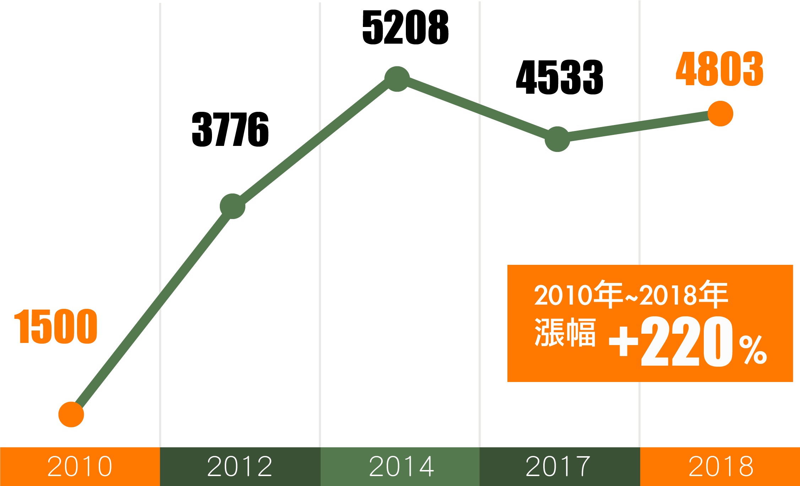
單位：萬元／公頃
備註：2010年數據為前農委會主委彭作奎所揭露，2012~2018年數據為《蘋果》整理內政部實價登錄資料。
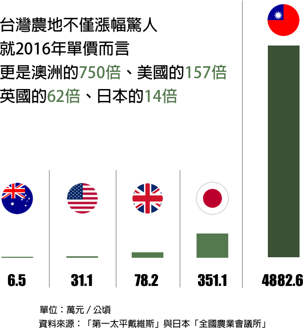
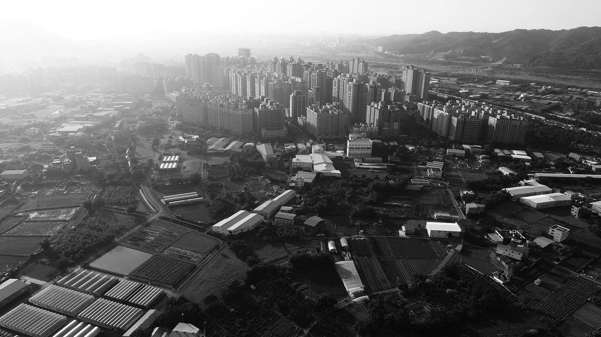
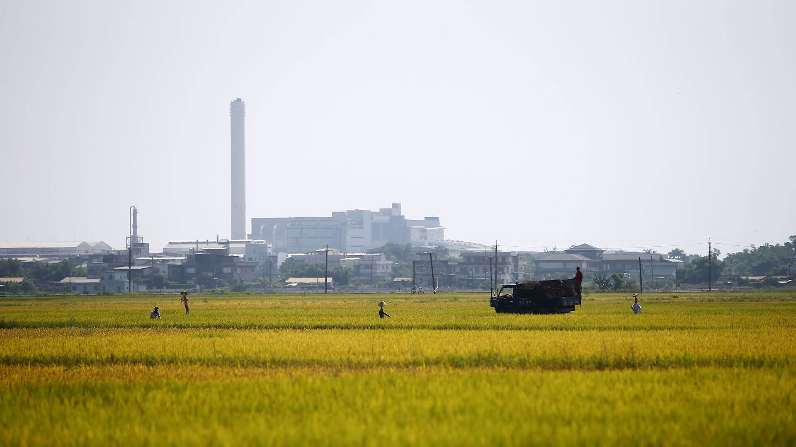


《蘋果》追查12多萬筆交易紀錄，發現2018年台灣農地價格，已達到每公頃4800多萬元，8年飆漲了3倍有餘。然而，天價般的農地樂了投資客，卻對於有心耕作的年輕人，形成一道道難以跨越的高牆……
《蘋果》將2012年下半年至2018年上半年，共12萬多筆交易紀錄，繪製成「全台農地大追擊」地圖，我們將帶您走進台灣的北、中、南、東，關注多個農地價格漲幅驚人的鄉鎮，並聆聽在地農人的控訴。
《蘋果》調查，政府主導的開發案，無形中助長投機行為，推升北部農地價格，在新北市幾個新造鎮的行政區，如三峽、鶯歌，6年農地都漲破200%；苗栗竹南的農地，漲幅也接近100%。面對高不可攀的農地，青農大嘆：「要買地，中樂透再說吧。」農地「女俠」洪箱更痛批：「政客都想拿現撈的，真的很可惡！」……
上萬座違章工廠盤據全台1.3萬公頃農地，《蘋果》調查更發現，受農地工廠推升行情，台中農地來到每坪3.2萬元、全國次高，彰化鹿港農地則是6年飆漲近7成。然而，今年2月行政院長蘇貞昌卻宣示，7千多家領有臨時登記證的農地工廠，明年到期可繼續經營，「讓為台灣拚經濟的工廠老闆，不用害怕被拆。」……
《蘋果》前進雲林直擊，多間包得密不透風、屋頂鋪滿太陽能板的溫室，裡頭盡是一片荒土，完全是「假耕作、真種電」。實價登錄更顯示，2012至2018年，雲林沿海種電大鎮台西、口湖，農地價格最多漲1.3倍；政府綠能政策的美意，儼然成不肖業者牟利工具，更因此推升農地價格……
有「米故鄉」之稱的台東池上、以溫泉聞名的宜蘭礁溪，現在遍地是豪華農舍、高級民宿，《蘋果》分析大數據更發現，池上、礁溪的農地6年來皆大漲超過100%。當地青農自嘲表示，「我們常常笑說在宜蘭，全世界的房子都看的到！」……
使用說明：
（1）如果您是使用電腦，移動游標將顯示「縣市」數據，點擊會出現「鄉鎮」數據，再點一次即返回。
（2）如果是行動裝置，點一下將顯示縣市數據，再點「點我看鄉鎮」會出現鄉鎮數據，點其他縣市即返回。
資料來源：內政部實價登錄網
統計時間：2012年第3季至2018年第2季（共6年）
資料定義：非都市土地＞特定農業區&一般農業區＞農牧用地
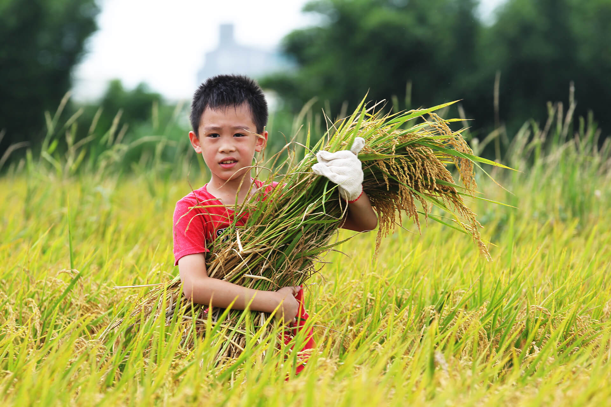
每公頃要價4800萬的天價農地，正在扼殺台灣農業未來，為解決農地問題，2022年將啟動的《國土計畫法》被不少人寄予厚望；然而，許多學者悲觀認為，政府早失去農地的徵稅武器，且地方政府對土地管制的長期失能，恐非一時半刻能改變，「台灣不缺『法』，缺的是『執行』。」……
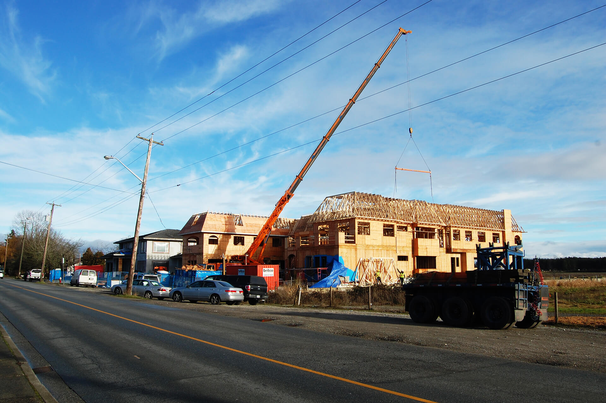
數據顯示，台灣農地每公頃均價4882萬，是澳洲的750倍、美國的157倍、英國的62倍，突顯台灣農地已淪為炒作商品。然而，這種現象並非我國獨有，遠在太平洋彼端的加拿大卑詩省，由於中國富人湧入置產，當地許多建商在農地蓋起「巨型豪宅」。不過，該地政府立刻立法限制豪華農舍的興建，值得台灣借鏡……
採訪報導／新調查中心
土地的炒作與掠奪，已從房市全面延伸到農地！《蘋果》攜手「用數據看台灣」團隊，爬梳12萬多筆交易紀錄，計算出台灣農地價格，在2018年達到每公頃4803萬元的天價；若與實價登錄上路前、學者彭作奎所揭露的2010年均價1500萬元相比，等於台灣農地8年翻了超過3倍。
《蘋果》採訪團隊更深入全台，發現「高不可攀」的農地正在扼殺年輕務農者。只能租地耕作的7年級青農方子維說，「很想買一塊地，但是我們根本買不起。」宜蘭青農領袖賴青松更講得直接：「賣地的人是賣故鄉，買地的人是買夢想！」
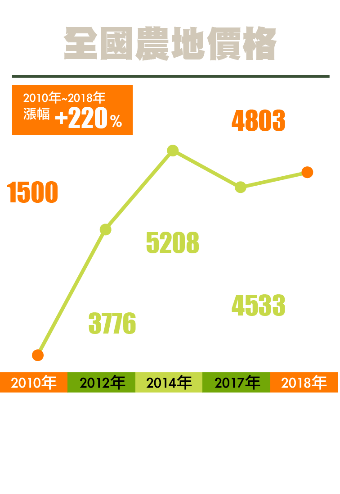
中研院曾發佈「農業建議書」示警，政府放任農地買賣，助長「種」農舍、「種」工廠歪風，導致台灣十年流失1770座大安森林公園面積的農地；該建議書主筆者、前農委會主委彭作奎更向《蘋果》表示，農地不斷轉作他用的情況下，更同步推升了價格，台灣農地已在2010年達到全球最貴的每公頃1500萬元。
只是，2015年政府加嚴農舍興建後，看似農地亂象有解，但實情又是如何？為解開農地價格真相，《蘋果》攜手數據團隊「數據看台灣」，分析內政部「實價登錄網」2012年下半年正式上線後，至2018年上半年這6年期間，台灣在全國、縣市、鄉鎮區等不同行政層級，農地的漲幅、單價、交易量狀況。
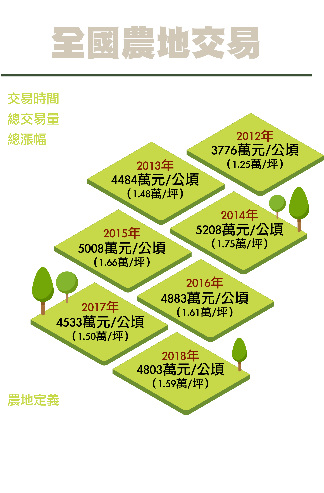
結果顯示，6年來全台共有12.3萬筆的農地交易量，等於每年有2萬筆、每天約55筆交易在進行。全國均價來看，2018年台灣農地均價為每坪1.59萬元，換算每公頃價格為4803萬元，相較2012年的均價1.25萬元、換算每公頃3776萬元，漲幅約27.2%。
再對比彭作奎揭露、2010年全國均價每公頃1500萬元，等同8年來台灣農地翻了3倍有餘，換算漲幅達220.0%。政大地政系教授林子欽分析，2000年《農發條例》修法、開放農地自由買賣後，農地就一步步走向商品化；截至今日，「農地已經變成不動產市場的一環。」
回顧台灣各地農地漲勢，林子欽指出，北部、中部、南部、東部的成因各異，依序可分為：政府開發、農地工廠、種電、農舍等4大因素。
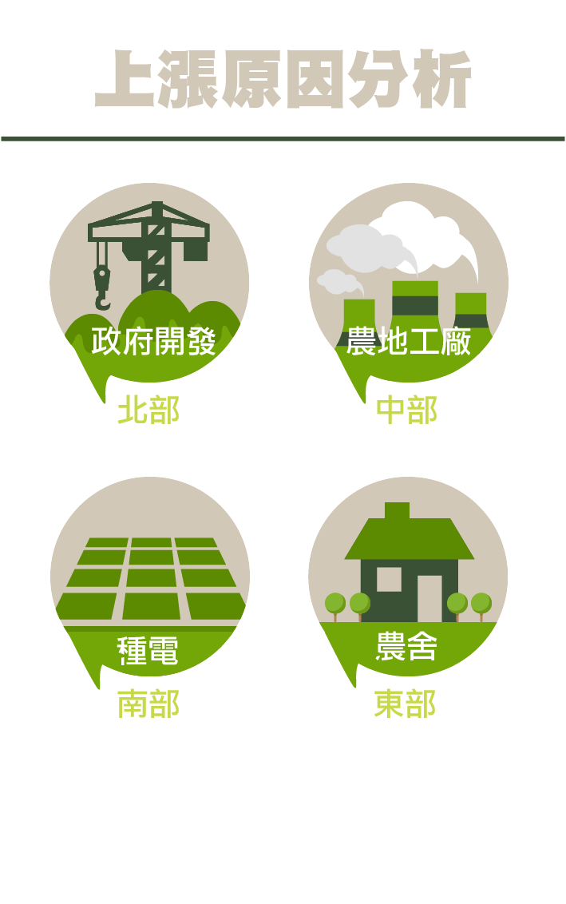
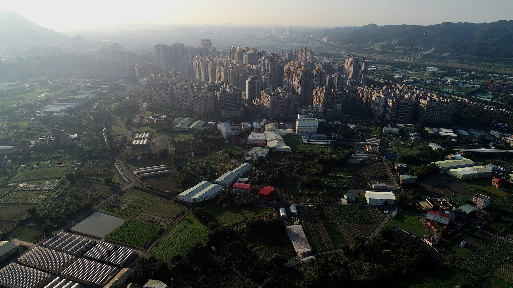
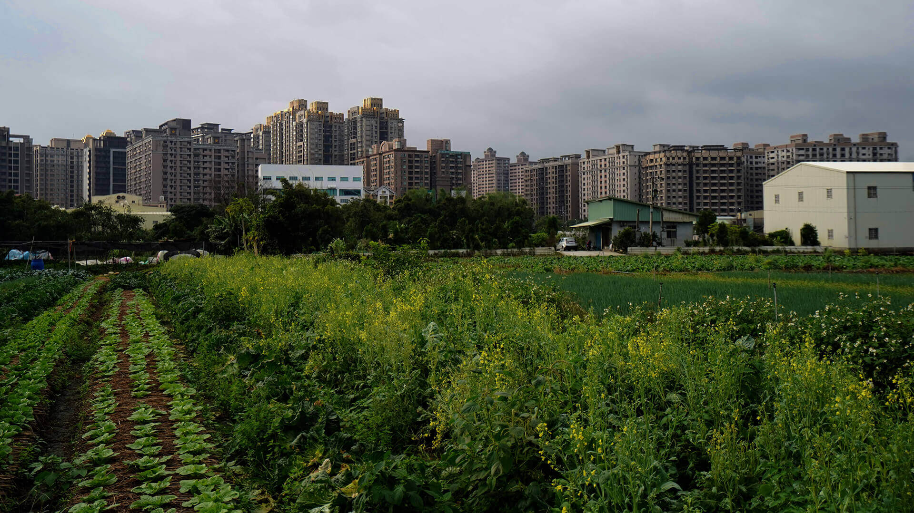
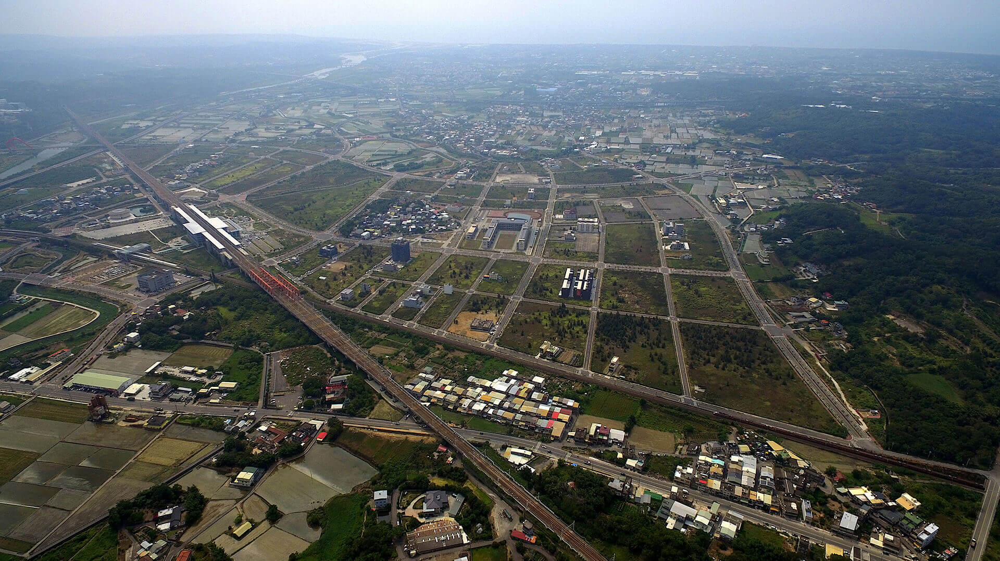
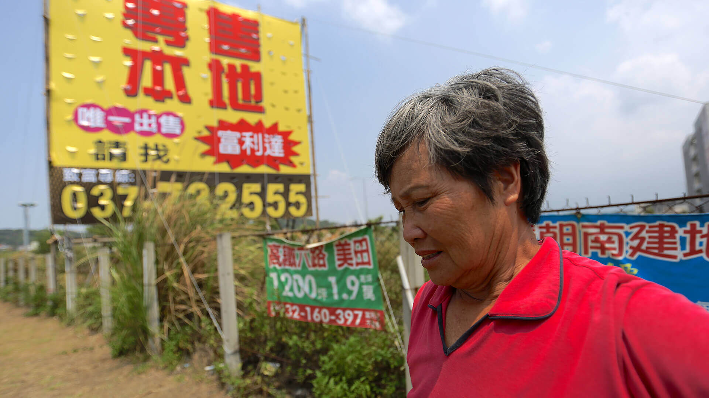
觀察北部農地價格，又以新北市的漲勢最為劇烈，6年共走揚117.4%，排名全台第1，苗栗縣的漲幅也近3成、約28.8%。新竹縣（含新竹市）與桃園市「漲幅」雖平緩，但「單價」皆落在每坪2.6~2.7萬元，分居全台第3與第4高，而全台農地單價排名第1的是新北市，每坪農地約5.3萬元，換算每公頃約1.6億元。
事實上，前農委會副主委、學者林國慶在90年代的研究就發現，農地價格與「都市的距離」密切相關，但是林子欽提醒，「如果農地真的拿來做農業使用，靠近都市這事情其實不是這麼重要，頂多就是農產品比較容易運到都市，但在台灣長期交通建設的改善下，這種好處（距離）其實非常低。」
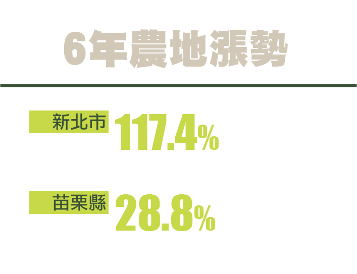
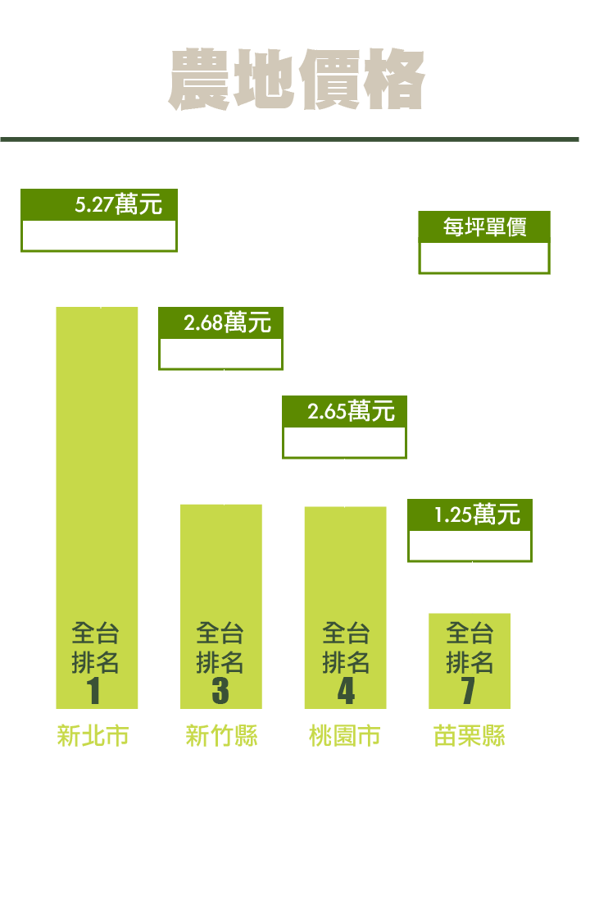
那麼，北部農地漲勢的原因到底是什麼？答案就是20多年來、多由政府發動的開發案。學者徐世榮直言，政府不斷以新的都市計畫，或擴大既有計畫區的範圍，徵收大量農地、轉做都市土地。林子欽說，這種期待都市擴張後，農地轉做住宅或商業用地的「轉用」期待，就是拉抬北部農地價格的力量。
新北交易數據裡，也與學者分析相符。像以「北大特區」重新造鎮的三峽，6年農地漲了239.1%；3年前啟動「鳳鳴重劃區」的鶯歌，漲幅則達214.2%。代書林孟毅表示，除了重劃區外，捷運三鶯線也拉抬三峽農地行情，近期確實有不少人在收購農地，「地主就會用北大特區的地價套在農地上。」
然而，農地「鑲金」甚至「鑲鑽」背後，卻是許多人的血淚。像是30年多來，挺過政府5次徵收的三峽龍埔里居民，去年竟迎來第6次的徵收惡夢，居民陳心婕向《蘋果》哭訴：「我們就是美河市翻版！是不是要死給政府看，政府才知道他那隻無形的手應該收了？」
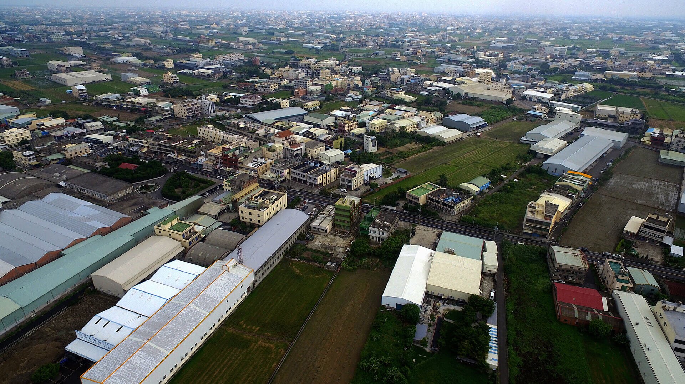
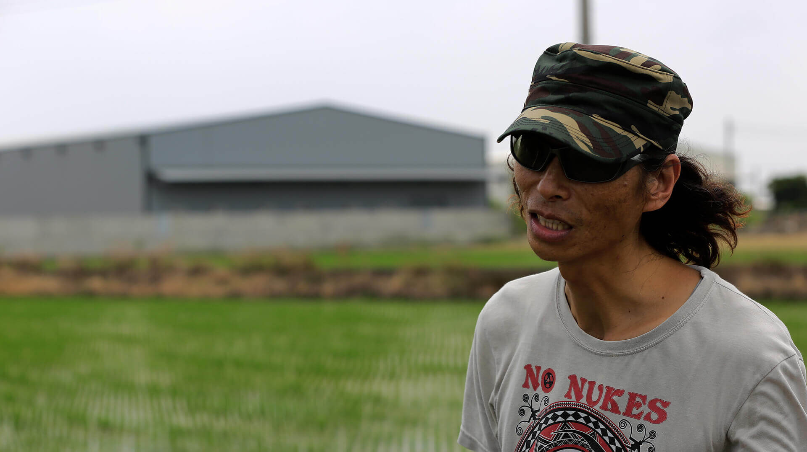
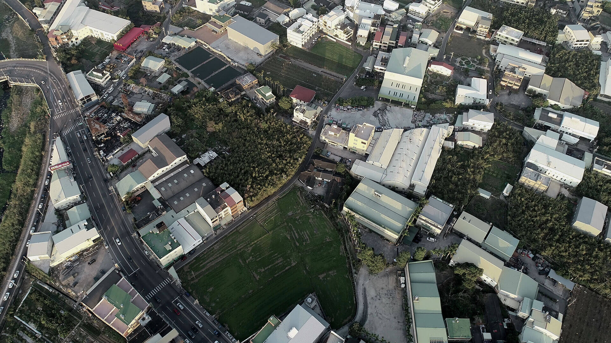
中部縣市的農地漲幅，以彰化縣的27.9%最高；進一步分析該縣26個鄉鎮，可發現農地工廠的「重鎮」鹿港、和美，分別上漲68.8%、67.4%，另一重災區埔心更漲了86.3%。台中儘管全市農地均價僅漲13.8%，但兩大農地工廠熱區潭子、神岡，6年農地各漲31.8%、36.9%，漲幅超過全台中的平均值。
農委會統計，台灣有1.4萬公頃的農地被蓋了工廠，並以彰化、台中的面積為全國第1、第2多。北大都市計畫研究所教授葉佳宗分析，農地工廠屬於違法的農地轉用，長期以來，地方政府對其取締消極，導致農地工廠逐漸聚落化。林子欽指出，相對全球其他國家，農地工廠幾乎是台灣獨有的問題
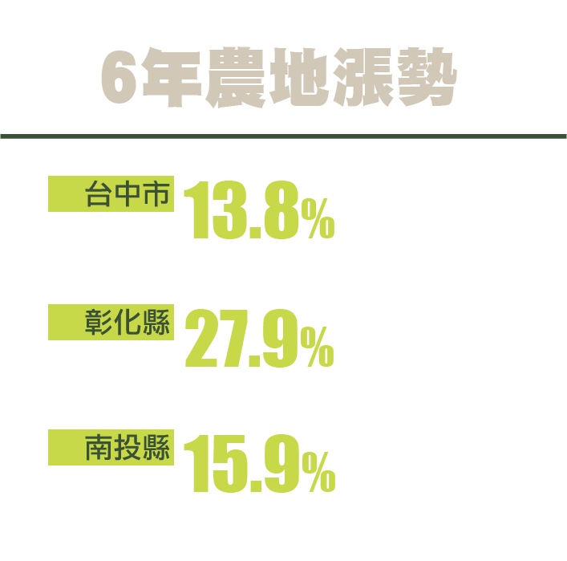
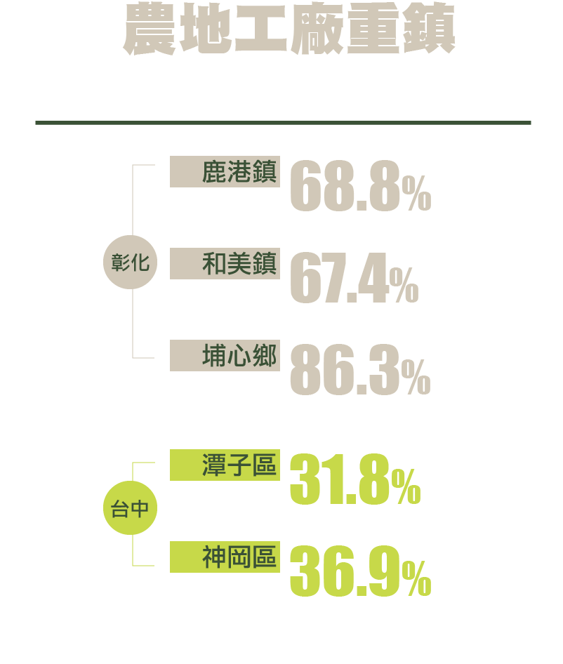
回顧過去6年，台中與彰化對農地工廠的態度，又以彰化最曖昧不明，彰縣府甚至曾以「五不一絕對」的說法，表示不會貿然拆除農地工廠，會以「就地輔導」為目標；這點，也反應農地的交易量上，數據顯示，彰化縣6年來有1.4萬筆的農地交易，排名全國第3。
執法相對嚴厲的台中，6年農地交易量僅彰化的一半、為7113筆；某種程度反應2015年至2018年，中市府拆除了745間的農地工廠，數量是彰化的5倍多。可惜的是，政府鐵腕雖遏止了「交易量」，卻還未影響「價格」；以潭子為例，該區2012年農地均價約每坪7.8萬，但到了2018年則攀至每坪10.3萬元。
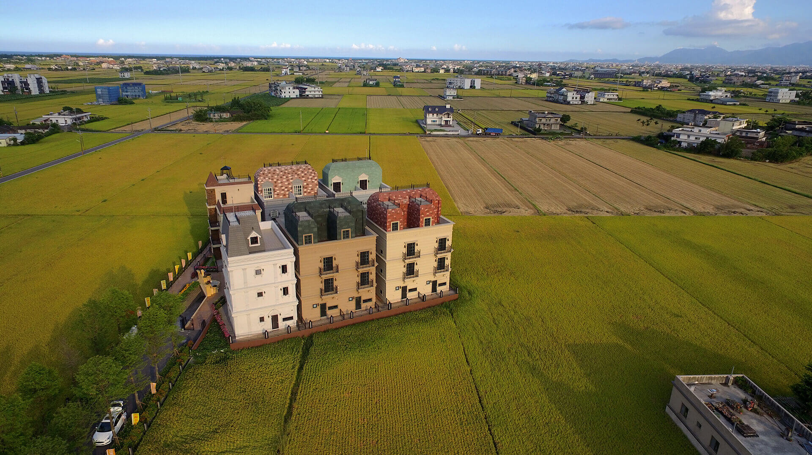
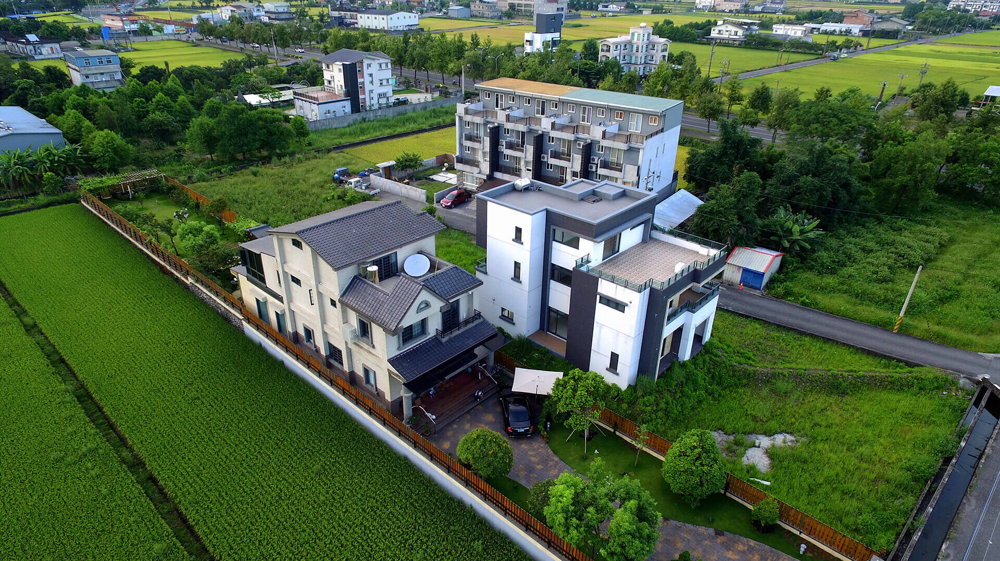
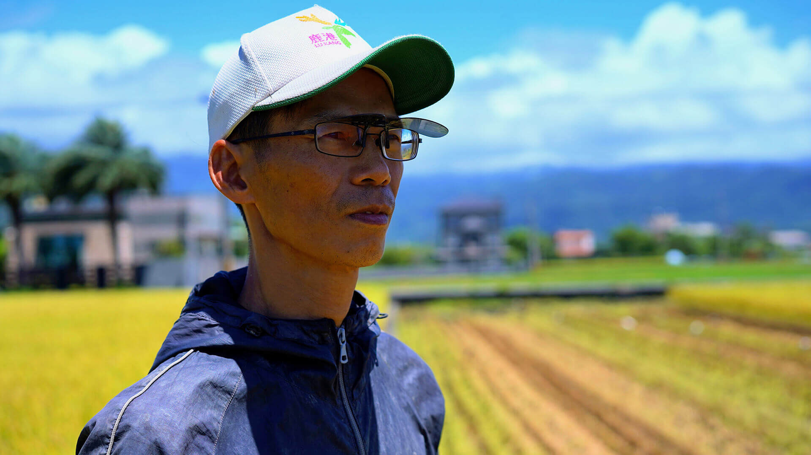
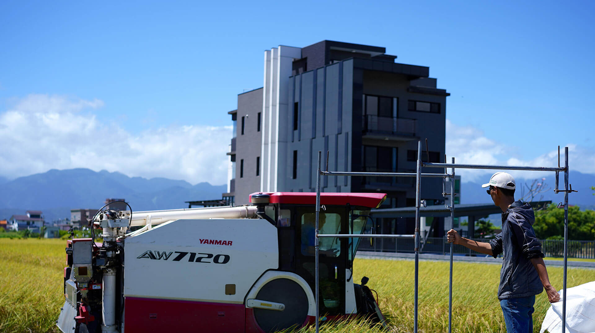
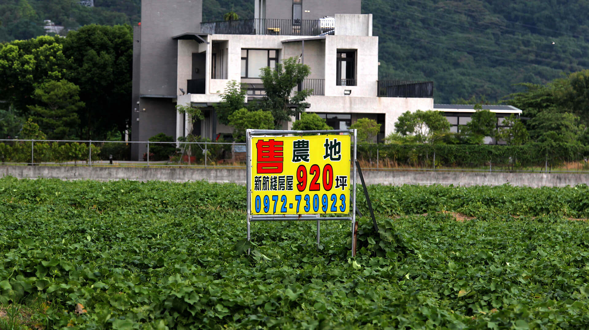
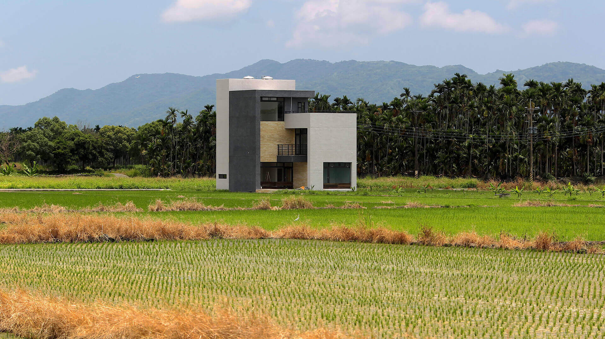
至於東部三個縣市，台東以58.0%的漲幅排名東部第1，若與台灣所有縣市相比，台東的幅度為全國第2；「後山」花蓮6年上漲29.2%，宜蘭則漲18.3%。深入各鄉鎮觀察，池上是台東農地漲最多的鄉鎮、漲幅達133.7%，宜蘭則以礁溪漲100.3%最多，而花蓮的瑞穗，漲幅則有112.1%。
學者林國慶、彭作奎、林子欽共同指出，19年前《農發條例》修法，拿掉農地買賣僅限農民的「緊箍咒」後，宛如打開潘朵拉盒子，加速農舍在全台開枝散葉，又以東部最為嚴重，林子欽更指出，農舍除了供家庭居住，「有些甚至成為民宿。」
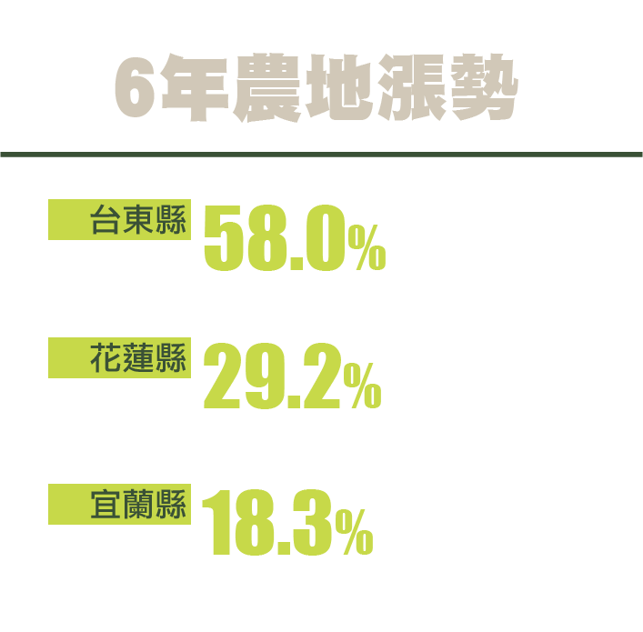
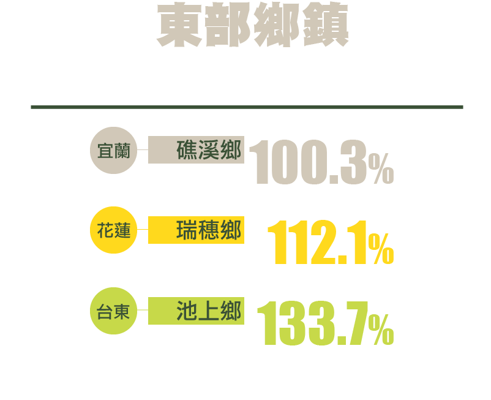
宜蘭青農領袖、「穀東俱樂部」創辦人賴青松回憶，2000年他赴員山鄉務農時，當地農地每坪不到6千元，而目前已漲逾2倍，他訕笑：「如果有錢應該要借來買，不然真的是很虧。」面對農舍一棟又一棟佇立田中央，他重炮抨擊：「賣地的人是賣故鄉，買地的人是買夢想！」
賴青松指出，當農地成為投資的商品，農夫腳下的土地就成為一塊隨時會被抽走的地毯，為一旦地主賣了地，就得停止耕作，「農夫能過什麼日子？」同樣一甲地，農夫看得是能生產多少稻穀；但炒地的人看得是，「三個月能夠轉手一次，這筆就現賺100萬。」
回礁溪務農3年的七年級青農方子維，望著家鄉農地滿是農舍，感嘆在雪隧通車前，「都是一望無際的稻田。」面對礁溪一甲農地價格接近8千萬元、有些甚至破億，他只能向親戚借地種田，耕一年、算一年，猶如回到人類農業史最初的游耕型態，「很想買一塊地，但是我們根本買不起。」
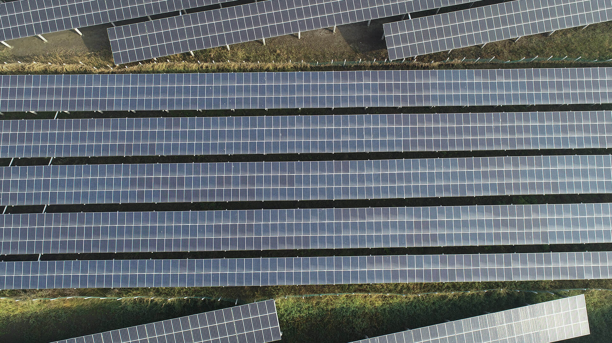
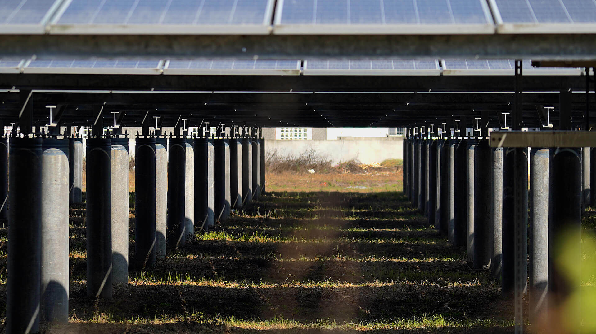
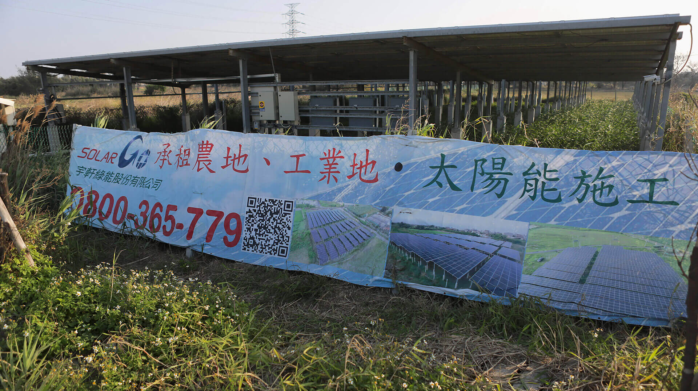
都市開發、農舍相對少的嘉南平原，漲勢相對平緩；不過，《蘋果》在大數據中觀察到，近年大力推廣綠電的屏東縣、雲林縣，6年農地漲幅分別達45.4%、18.3%；在雲林，太陽能板的種電大鎮台西鄉、口湖鄉，漲幅各為128.5%、98.0%，是雲林農地漲最多與次多的鄉鎮。
《蘋果》實際前往雲林縣，發現不只台西、口湖被認定為嚴重地層下陷的農地上，處處插滿太陽能板，連地處內陸的二崙、褒忠、崙背，許多屋頂鋪滿太陽能板的溫室，室內只有大片黃土或雜草，根本看不到任何作物種植，顯見「假種植、真種電」已在當地形成亂象。
口湖青農王玎維批評，當地有人將太陽能板架高2公尺，號稱可以在下面種咖啡，但其實大部分陽光都被遮住後，植物根本無法行光合作用，「這是個幌子，是為了種電而種電！」他回憶，小時候的口湖處處是油菜花，「以前這裡只有花海，現在都變成太陽能（板）海！」
他透露，太陽能業者為了爭取更多農地種電，不僅自願為農民免費蓋溫室，還會聯合地方樁腳，共同遊說老農，只要對方點頭答應種電，樁腳就會得到分潤。口湖老農王進吉痛批，一旦農地全部種滿太陽能，「那農村永遠都不會有發展了，這是在剝奪年輕人！」
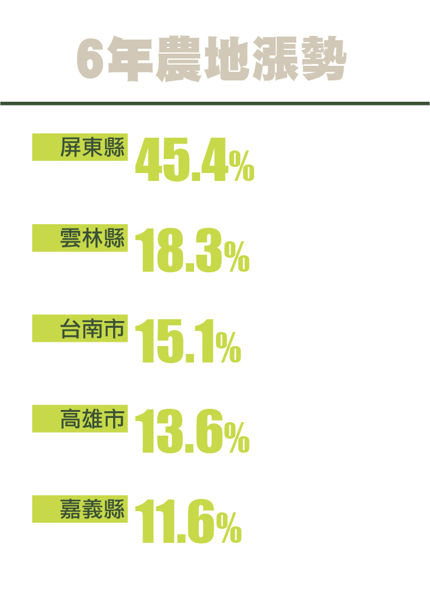
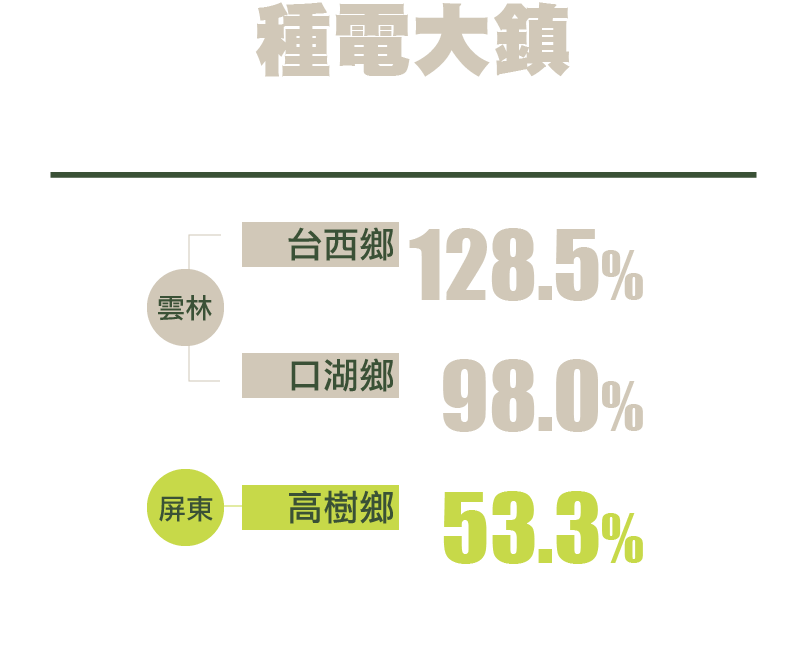
對於農地建工廠、蓋農舍、種綠電，農委會主委陳吉仲表示，考量執行難度與影響面積，共佔據全台1.4萬公頃農地的違章工廠，會是農委優先處理的農地亂象，未來只要確認汙染事實，就會斷水斷電，「那（農地工廠）有1、2千家，對我們的農產品生產影響很大。」
有關農舍問題，陳吉仲說，「不是不處理，只是有優先順序。」農委會的立場是，建農舍是農民的特許，一間農舍不論建造者還是居住者，都該是農民；至於未來是否可能修法禁建農舍，他說：「幾乎不可能修，農委會提案（修法），還要多數（立法）委員支持。」
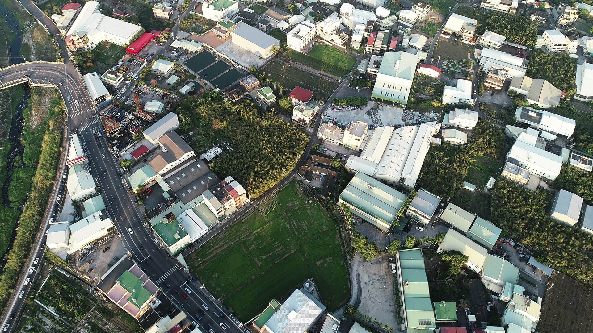
他坦言，目前全國平均每公頃4800多萬的農地，「價格高到不可能去購買，」年輕務農者幾乎不可能買地，只剩租地的選項，「因為沒有人買的起。」農委會未來除了盤點10.5萬公頃廢耕農地，還會與地主、老農協調，將以政府為租借平台，讓青農有地耕種，「把經營權、所有權區隔出來。」
學者林子欽提醒，台灣昂貴的農地價格，將使得真正想從事農業的年輕人，連選擇「農」這個職業的機會都沒有，假如一個人的父執輩沒有農地，那麼除非他甘冒貸款數千萬元的風險，否則幾乎沒有務農可能，「從剝奪角度來看，就是『我已經剝奪走你其中一個選擇。』」
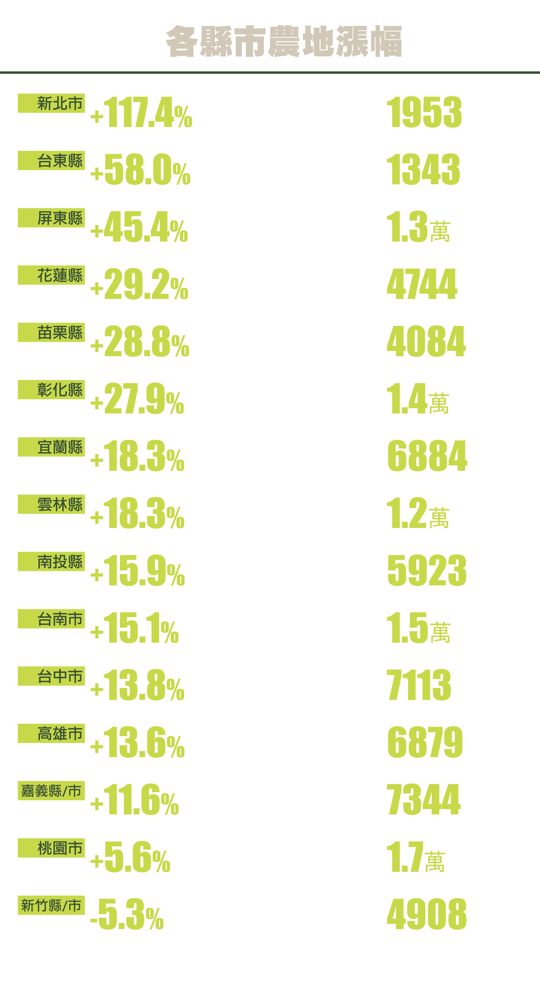
採訪報導／林奐成、侯良儒、陳偉周、陳鼎仁、吳宜靜
《蘋果》調查，政府主導的開發案，無形中助長投機行為，推升北部農地價格，在新北市幾個新造鎮的行政區，如三峽、鶯歌，6年農地都漲破200%；苗栗竹南的農地，漲幅也接近100%。面對高不可攀的農地，青農大嘆：「要買地，中樂透再說吧。」農地「女俠」洪箱更痛批：「政客都想拿現撈的，真的很可惡！」
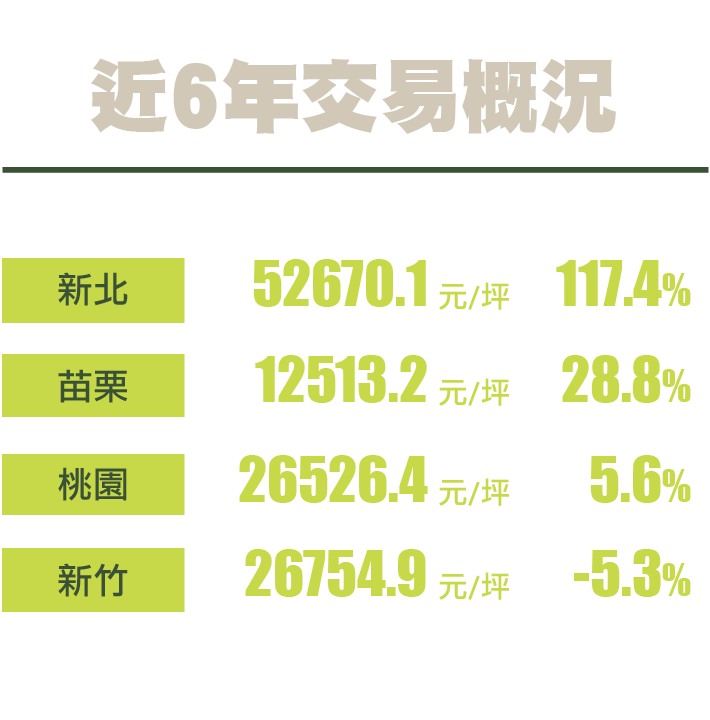
《蘋果》分析內政部「實價登錄」數據發現，在2012年下半年至2018年上半年6年期間，新北市農地漲幅達117.4%，全國最高。深入新北29個行政區，又以近年以「北大特區」成功造鎮的三峽農地漲幅最驚人，總計6年漲239.1%，同樣推案開發不斷的鶯歌，6年農地也漲了214.2%、排名新北第2。
苗栗方面，全縣農地價格的漲幅約28.8%，從每坪單價來看，2012年僅9717元，到了2018年則來到1.3萬元；也就是說，在苗栗想要買1公頃農地耕作，竟要掏出近4000萬，堪稱天價。而苗栗18個鄉鎮裡，以西湖上漲295.1%最多，卓蘭漲約188.2%，工業區不斷進駐的竹南，漲幅也有95.7%、近乎翻倍。
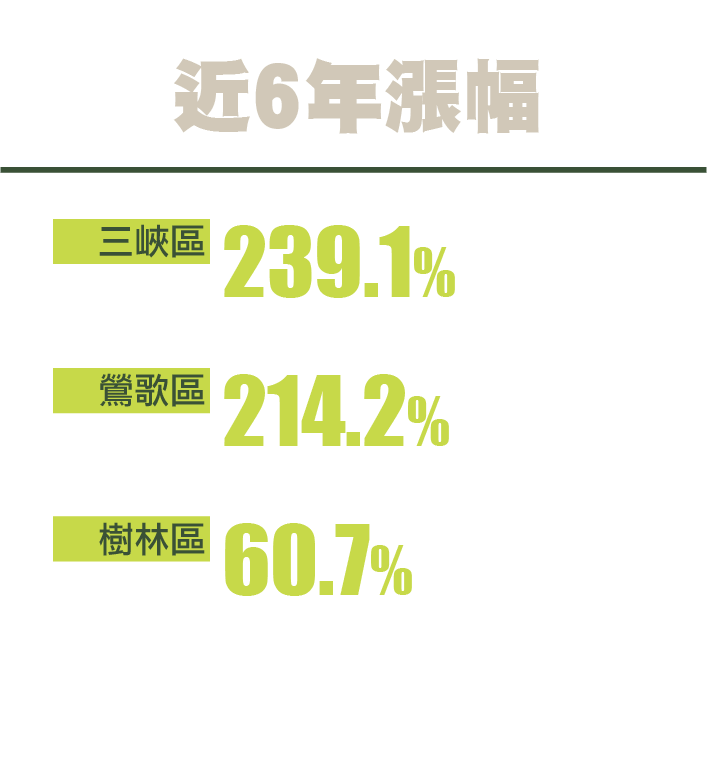
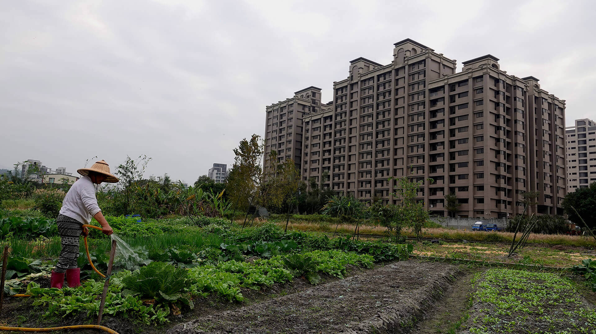
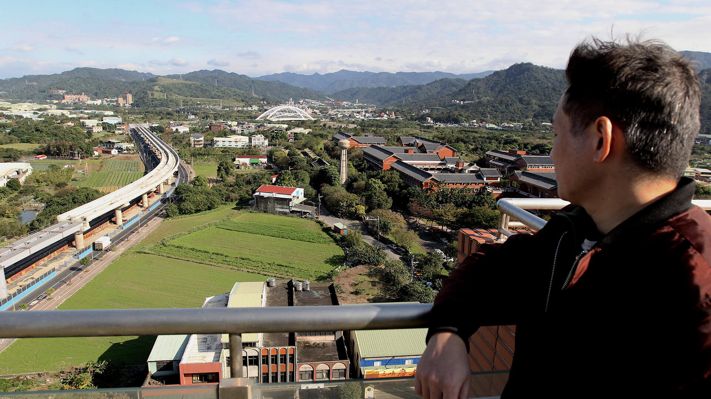
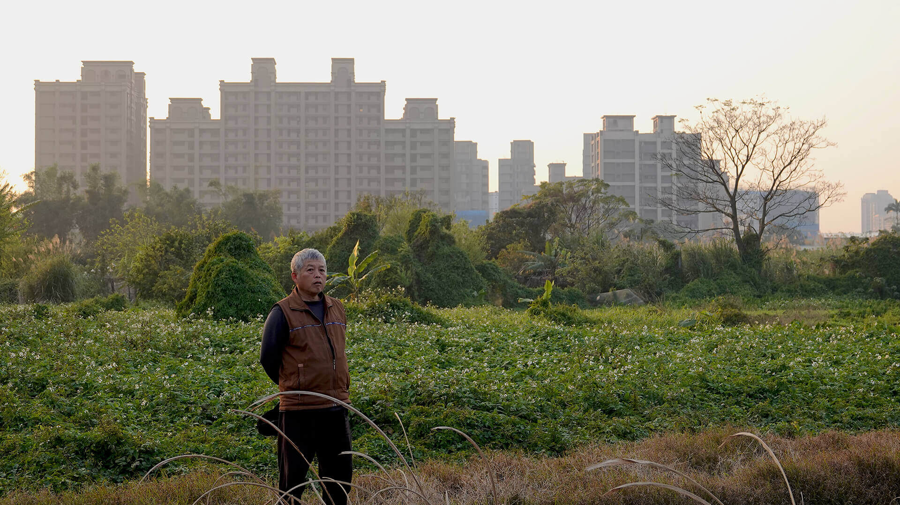
政大地政系教授林子欽分析，北台灣農地價格的最大推力，就是由政府端帶動的開發案。學者徐世榮更重話抨擊，政府長期以各式開發案，將農地變成都市土地，導致台灣每年逾千公頃農地流失，「破壞者就是政府！」。為了解地方現況，《蘋果》走訪多地，發現政府強徵農地、「官逼民反」的戲碼，不斷重複上演。
「政府不斷徵收農地，蓋大樓讓利給財團！」世居三峽龍埔里的劉秉峰，領著《蘋果》走訪委身巷弄內的三合院老宅，他說：「三合院是典型的鄉村田園，我小時候這邊都是綠油油的田，大人們餵豬吃飼料、在庭院裡曬稻穀，直到我家被徵收2次，幾乎毀了我一生。」
2012年，政府為興建捷運三鶯線，宣布將在龍埔里推動「麥仔園都市計畫區」，計畫透過區段徵收，在該里設置3個捷運站，劉秉峰毅然辭去工作，與居民、北大學生籌組自救會，終於在2016年擋下開發案；想不到2018年，開發案竟借屍還魂，以「變更三峽都市計畫案」的名義在龍埔里重啟徵地。
受訪當天，劉秉峰拿出一疊文件，記錄著30年來，政府對龍埔里先前的5次掠奪：1988年國家教育院案、1922年農業改良場案、1994年北大新市鎮、2010年北大聯外道路案，以及2012年的麥仔園都市計畫區案。
面對第6次徵收，劉秉峰痛批，新北市府透過解編特定農業區，向里民徵地，而他翻閱計畫書更發現，小小一個龍埔里，竟在2公里內被設置3個捷運站，其中緊鄰龍埔路、與機廠共同設置的「LB05站」就設在田中央，「根本違反農地農用的精神。」他替居民發聲，感嘆：「抗爭6年，我已經心力交瘁，民鬥不過官。」
「你叫我死我也不搬，祖傳的農地，到我的手裡把他毀掉，以後怎麼見祖先。」65歲的老農蘇欽益氣憤說，多年辛苦種植的筊白筍田，官方一紙公文就把土地徵收、房子拆除，「是要我們自生自滅嗎？」他看著自己一甲大的筊白筍田，幾隻白鷺鷥駐足覓食，外圍全被「北大特區」的高樓大廈包圍住。
三峽代書林孟毅直言：「社區造鎮的建案，連帶會有拉升農地價格的作用，一切跟著政府的開發計畫走，農地變化跟市場變化差不多；現在三鶯捷運有點雛形，吸引買方有追價的意味。」他私下透露，會買農地置產、投資的，都不是一般的市井小民，許多民意代表早就卡位。
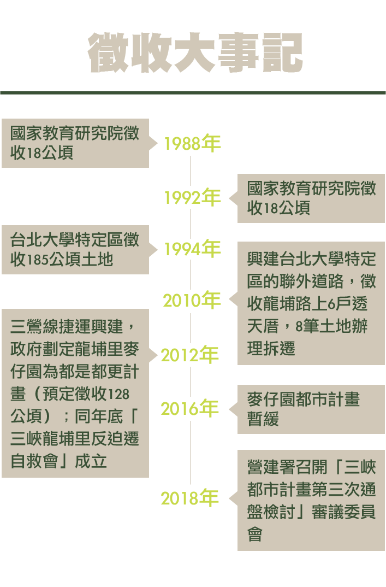
「土地是要種東西給大家吃，不是拿來賣的！」中午烈日當空，苗栗農民洪箱坐在田梗的樹蔭下乘涼，細數著她十多年來如何對抗政府徵收土地。現年62歲、務農超過30年的她感嘆，當地農田本來不貴，但後來劉政鴻當縣長時大規模「圈地」、炒作價格，讓一切變了樣。
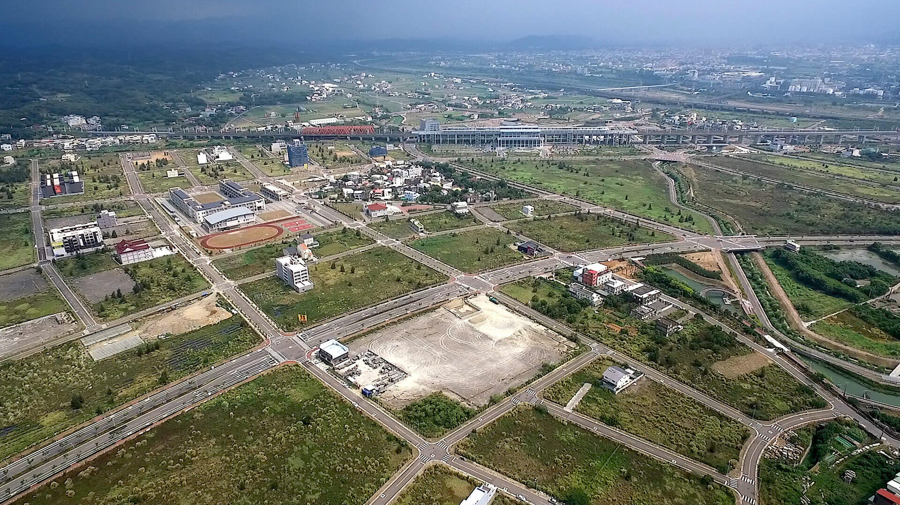
11年前的2008年，苗栗縣政府計畫徵收後龍360公頃土地，打造「後龍科技園區」，個性強悍的洪箱擔任「衝組」，帶領農民反抗徵收，「這塊是稻米的特定農業區，台灣已經不多了！」2011年，內政府營建署終於駁回該開發案，農民保住田地，洪箱也被媒體封為「農村女俠」。
抗爭背後，洪箱回憶當時，卻是心酸無人知。她說，曾跟農友們跑到台北凱達格蘭大道抗議，「大家都很『鬱卒』，那種痛啊，現在我想起來還會怕，你不知道你的未來在哪裡；我的角色就是種田，你把我的田賣掉，不是斷了我的後路嗎？所以我說，徵收最殘酷，而且它是合法地搶奪。」
「做官的、財團的要賺錢，他們錢從哪裡來？最好賺的，就是都更跟農田：便宜跟你買，變更成建地！你看高鐵那邊，現在變更之後一坪好幾萬，我們這邊人都買不起，」洪箱帶我們走訪高鐵苗栗站周邊的重劃區，解釋農地如何透過變更，變成可以投機炒作的建地。
她的身後，可以看見多幅巨大的「專售本地」地產看板，還有廣告寫著「高鐵六路美田1200坪，每坪1.9萬」。實價登錄顯示，6年來，後龍的農地總交易量達638筆，是苗栗第2熱絡的區域，價格總漲幅則達26.3%；與後龍接壤的西湖更誇張，漲幅高達295.1%。
洪箱說，高鐵附近的農地位於內陸，原本是生產優質米的良田，「結果現在廢棄養蚊子，很可惜。」洪箱批評，劉政鴻真的「很敢，像土匪一樣」，他的住家「恰巧」就位在高鐵特區之內，卻不用像其他居民一樣配合遷移，而是就地保留。等到高鐵一興建、通車，房價便立刻翻漲。
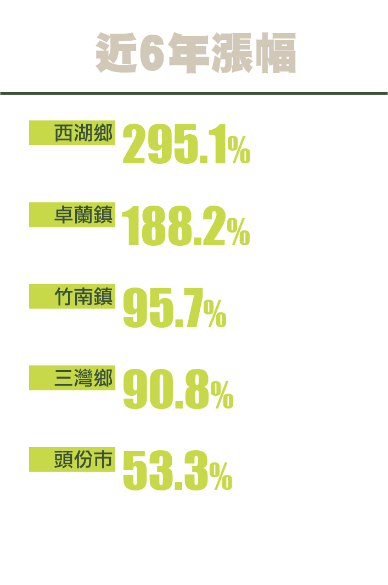
除了洪箱所在的後龍之外，其實在竹南鎮的崎頂，也曾面臨縣政府強硬徵收，要開發「崎頂產業園區」。所幸，當時的崎頂自救會會長、果農謝文崇挺身而出抗爭，終於保住農地。
現年62歲的謝文崇，曾當過13年調查員、創業經商，2010年決定回到家鄉務農，「從小在這塊土地，跟我父親一起種植過，所以對這片土地很有感情」。他建造一座溫室，種植草莓與番茄，未料回鄉沒多久，農村就「出事情」。
「2013年春天，大埔已經徵收了，劉政鴻接著就在我們村莊辦說明會，農民就組自救會，起來跟他抗爭！」謝文崇強調，崎頂的丘陵地是山坡保育區的農牧用地，生態保存良好；沙質地可涵養水份，宛如大水庫，若被破壞將衝擊環境。
謝文崇質疑，苗栗根本不缺工業用地，「那時很多工業用地，劉政鴻都把它變更為商業和住宅用地，然後再來圈農地，這很荒謬！」他和農民奔走抗議，加上發生大埔「張藥房」老闆自殺事件，迫使政府在2014年讓步，撤回開發案。
根據實價登錄資訊，竹南農地價格在6年間上漲95.7%，每坪單價更走漲至2.2萬，是苗栗農地第2貴的地方。謝文崇說，以崎頂為例，2分地要價600萬、蓋一座溫室則要300萬，加起來900萬，年輕農夫根本不可能買地，都是租地耕作，「只有農二代回來做，比較有機會，因為他本來家裡就有地。」
再往南一點的苑裡，是過去6年苗栗農地交易量最大的地方，總筆數達到1200筆，價格漲幅更高達39.7%，等於平均一年漲6~7%。鄉間馬路的兩旁，散布著幾片廣闊的稻田，但在農地的不遠處，可以清楚看到數座鐵皮工廠和怪手進出。
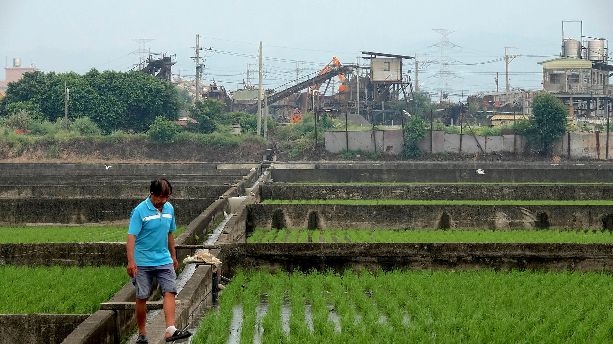
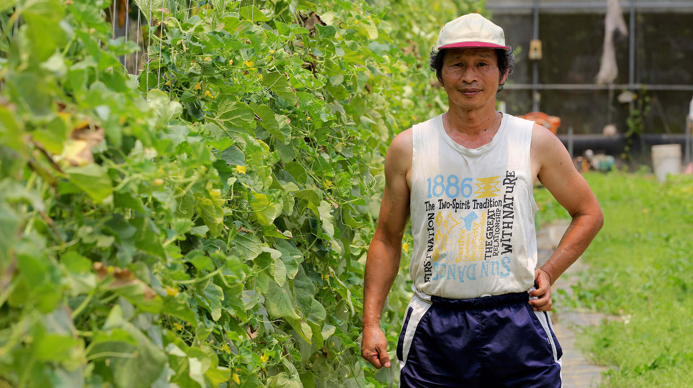
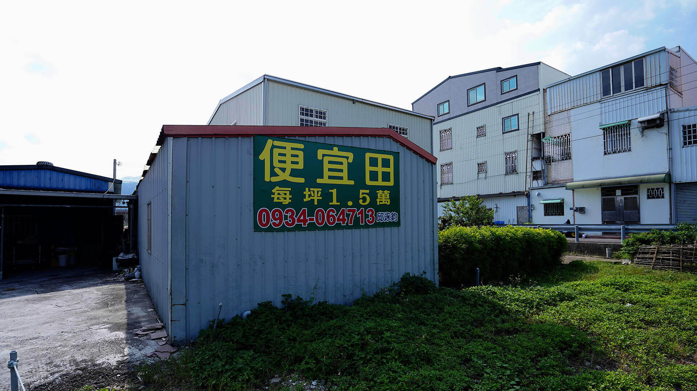
「這裡是我的阿祖、阿公、爸爸三代人開出來的。他們拚了命，用了40幾年，把這裡從河埔地變成良田。」苑裡「農四代」、種植小麥的青農柯雄能說，許多老農對土地情感深厚，會繼續持有農地，但年輕的地主，則傾向出售換錢。
柯雄能說，苑裡農地從1998年時的每坪6000元，漲到現在的1.2萬至1.5萬，漲幅逾一倍，「以水稻或雜糧為例，你沒有操作3公頃，大概活不下去。一公頃要3、4千萬，3公頃就要一億多，我如果有一億多，還來種田幹嘛？」
農地價格飆漲的背後，是投資客的湧入炒作。柯雄能觀察，農地的持有人多半來自外縣市，透過土地仲介居中買賣；土地被轉手的過程，不斷被加價。另一方面，有些農地成了違章工廠，「往山腳的方向，那邊的鐵皮工廠，3，4分以上。倉儲也進來了，還有一些包材工廠，群聚在高速公路附近」。
從北到南，可以明顯發現苗栗縣府推動都市開發、農地價格飛漲的痕跡；對於農地能否「起死回生」，許多農民很悲觀。謝文崇就認為，如果由地方政府來做國土計畫，肯定會繼續圈地，破壞良田。
洪箱則強調，雖然現在有國外的農產品，但畢竟不如本地的作物可以確保品質，「人永遠跟土地、農業是分不開的。你說，電腦可以吃到飽，別傻了，有一天沒米了，你要怎麼吃到飽？」
對於農地的未來，洪箱則是抱持平常心，咧嘴笑說：「種田是最大的賭徒，可是我覺得，老天爺很公平。台灣的土地，每個地方種的東西都不一樣，像我們這裡的西瓜和番薯就很好吃。這塊土地讓他去做工業區，太對不起老天爺了。」
採訪報導／林奐成、侯良儒、陳鼎仁
苗栗的公館，是全國唯一的紅棗專業產地，品質優良而外銷至新加坡等地；然而《蘋果》調查發現，近年來一間間的歐風別墅、豪華寺廟，披著農舍的外衣，在田間拔地而起，將農村切割得四分五裂，更造成價格飆漲、青農買不起田地。農地早已不農用，慘淪有錢人投機炒作的工具。
為改善此困境，當地棗農陳淑慧在農地上打造一座「互助基地」，為青農提供環境和人脈，讓他們逐步熟悉農村、摸索想種植的作物，期盼結合年輕人創意與活力，重建破碎農村。
《蘋果》彙整2012至2018年實價登錄數據，發現在苗栗縣裡，公館鄉6年總交易量達344筆、為該縣第3多。走訪當地的119甲縣道，只見大大小小的農舍錯落田間；一些正在施工，僅建好水泥外牆，其他的已是美輪美奐的典雅別墅。大馬路邊插滿廣告立牌，寫著「便宜田」或「農舍，5房2廳」，顯示交易熱絡。
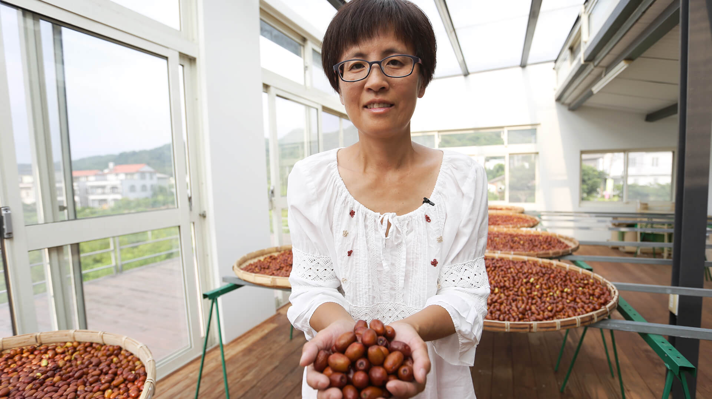
「119甲線開通後，政治人物每個都得意洋洋。之後，路兩邊的農地都漲價，現在變每坪2，3萬，大部分蓋了豪華農舍。農地不再是農業使用，它已變成一個商品」，紅棗果農陳淑慧，回想10年來農舍興起的過程，話語中滿是唏噓。
原是台北上班族的她，2008年毅然來到農村，買下一片土地種紅棗。那時候，農地一坪約6000元，現在漲到了2萬元，已是青農無法企及的天價。她感嘆，在地人多半對農舍無感，「大家都逆來順受，可是之後你的農村，都變豪華農舍群了，再也沒有漂亮的景觀，那時候農地也沒有價值了」。
陳淑慧也指出，公館農村面臨的另一個問題，則是外地人不甚了解、在地人又長期漠視的「宗教入侵農地」。根據農委會2017年盤點的數據，全台共有3070公頃的農地蓋滿宗教寺廟，完全沒有從事農業活動，而且問題越來越嚴重。
陳淑慧說，在附近的台6線公路上，豪華寺廟一間一間地蓋，有些沒有立案，就開始去佈施、送餐；這些寺廟會買下大約2分大的農地，將原本的農舍改建成「精舍」，有的兩層或三層，相當豪華。
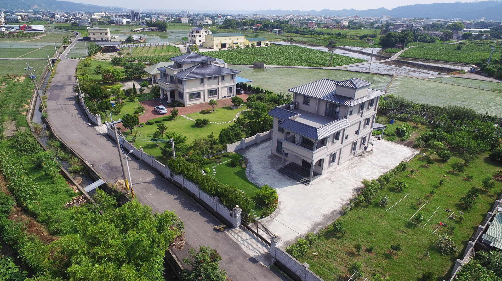
她曾看到，附近有一處農地被賣給宗教人士，「他有申請蓋農舍的執照，那時候來看農地，就是一大堆密宗喇嘛。現在宗教界最有錢，出手最大方。另外一塊地，現在也變成某某法師的『接待所』，1分地變成遊樂場所，賓士車進進出出。這些信徒，到底知不知道法師在做些什麼？」
「農舍進來，只會把這邊的地價、房價抬升，引來有錢消費的外地人，不代表有心來這裡發展的人可以進來」，當地36歲青農林煒棟說，之前有考慮買地耕作，但看了價格嚇一跳，實在買不起，因此現在固定在陳淑慧的農地幫忙耕作，慢慢累積經驗。
農地價格飆漲，是否有被剝奪感？他苦笑說：「不會有強烈剝奪感，但覺得有點莫名其妙，覺得又要蓋了喔？算了，就這樣吧！剝奪感早就被消弭掉了。要買地的話，等我哪一天中樂透再考慮吧。」
林煒棟是標準的「新農」，來到公館才半年。他以前曾在工廠上班，但前年在新竹的水耕植物工廠工作，突然開啟了務農的「開關」，決心成為農夫。儘管在短期內，很難擁有真正屬於自己的農地，但他知足地說，農村環境舒適，不像都會區吵雜，「這裡是單純的勞力活，做就對了，感覺蠻踏實的」。
陳淑慧說，她發現很多青年想到農村發展，所以決定打造「互助基地」。2016年，她請了首名「農場見習生」，提供薪水請初來乍到的年輕人耕作。這些青農可獲得穩定收入，同時能借助陳淑慧的人脈，去找尋農田來租地耕種。
「年輕人到農場幫忙，解決我們需要人力的問題。他學習幾個月，去了解適不適合在這邊發展，然後去選擇想種的作物」，陳淑慧說，目前有4位青農在她的基地幫忙，同時也種植自己的作物，並透過她的通路銷售，形成良好的互助模式。
展望未來，她希望結合年輕人的力量，形成產銷的聚落。她強調：「農業必須走出新的格局，我希望跳脫以休閒、觀光為基礎發展的格局。我們在農村，要什麼樣的生活、生態或文化？這些都要建構在一起，人對土地才有真正的感情。」
採訪報導／林奐成、侯良儒、陳鼎仁
上萬座違章工廠盤據全台1.3萬公頃農地，《蘋果》調查更發現，受農地工廠推升行情，台中農地來到每坪3.2萬元、全國次高，彰化鹿港農地則是6年飆漲近7成。然而，今年2月行政院長蘇貞昌卻宣示，7千多家領有臨時登記證的農地工廠，明年到期可繼續經營，「讓為台灣拚經濟的工廠老闆，不用害怕被拆。」
彰化農民、紀錄片導演許文烽痛批，政府未提出具體輔導措施，就讓農地工廠走向合法，「只要到選舉，就把臨登展延，其實就是『就地合法』；用這種臨登的方式，去讓他們繼續做」，籲政府協助工廠遷至合法地點。
風起，金黃色的稻浪搖曳起伏，穗香迎風四溢，但就在不遠處，一座座吐著黑煙的鐵皮工廠，如同巨獸盤踞農田四周；「叭叭！」載著加工產品的貨車，來回奔馳在稻田旁的馬路，比工業區還要繁忙。
這是台灣獨有的「農地工廠」荒謬景象。查詢農委會「農業及農地資源盤查圖台」，可以看到代表「違章農地工廠」的紅點，密密麻麻佔據兩大地區：台中的潭子、大雅及神岡，為台灣重要的精密機械加工聚落；另一區，則是彰化的鹿港鎮，也就是水五金產業的重鎮「頂番婆」。
農委會統計，全台農地工廠佔地面積共13859公頃，相當於半個台北市。其中，彰化2348公頃、台中2170公頃，面積為前二大，許多工廠都未登記，是「災情」最慘重之處。另據內政部與經濟部調查，全台至少有4.6萬間農地工廠。
《蘋果》比對近6年實價登錄數據，發現彰化農地漲幅達28%，全台第6高；交易量14054筆，全台第3多。細看各鄉鎮，違章工廠所在的鹿港，6年來農地價格飆漲68.8%至每坪1.7萬，是彰化第5貴區域，交易量更破千，彰化最多。而在隔壁的和美鎮，農地每坪要價2.8萬，是彰化最貴地區，交易量也有671筆。
另一方面，台中農地均價來到每坪3.2萬，為全國第2貴，僅次新北；總交易量達7111筆，全國第7多。在農地工廠所在的潭子，2018年的農地價格達到每坪10.3萬，不僅是台中最貴，且價格是台中平均值的3倍之多。
由此可見，不論在彰化或台中，農地工廠的群聚，帶動了當地的農地交易，形成「農地不農用」，卻是拿去買賣、蓋鐵皮工廠的荒謬情況。
「工廠絕對影響我們這裡農地的價格，大車能到跟不能到的，價差馬上就出來了；工廠喜歡在大馬路旁邊的，出貨比較方便。」站在水稻田埂上，指著不遠處的一座鐵皮工廠，彰化鹿港農民許文烽感嘆，外地廠商湧入蓋農地工廠，農地價格也被不合理地炒高。
畢業於台藝大電影系的許文烽，除了農民身分外，更是紀錄片導演、台灣農村陣線成員，長期參與社會運動，為農民爭取權益。鹿港子弟的他，對於違章工廠的崛起，有最親身的體驗。
2011年，許文烽剛從北部搬回家鄉務農時，有一位遠房親戚買下附近的一塊田地，打算蓋工廠；他直接過去「拜訪」，跟對方說：「你如果要蓋工廠，我絕對檢舉到底。」對方聽到暴跳如雷，但後來仍知難而退，打消蓋工廠主意。
許文烽回憶，以前兒時1980年代初，一分大的農地價格約15萬，現在已漲到700萬，價差達到46倍。在1980、90年代，因為台灣整體股市、房地產飆漲，彰化農地的價格也跟著被拉抬起來，「1990年左右，已經一分地600多萬，那是第一波炒作，但還是『有行無市』：雖然行情喊到那邊，但交易不熱絡。」
到了2000年後，彰化農地的價格飆漲，便是直接受到政府錯誤政策的影響。許文烽指著遠方說：「那邊的幾家工廠，幾乎都是外地人來買的。那時候，開放自然人可以買農地，附近蓋工廠的就增加了，也帶動了農地價格。」
傷害已經造成，現在應如何改善？許文烽認為，針對新蓋的農地工廠，「應該要即報即拆，一定要設下停損點，不能再增加了」。對於既有的工廠，要由政府出手，整合中小企業的土地需求，並輔導轉型，讓他們取得合法的工業使用土地。
不過，許文烽也指出，對中小企業來說，要在鹿港附近找到一個區位好、符合法規、價格可負擔的工業地，其實很不容易。
「我們的工業區，絕大多數都沒有以中小企業的需求，來做規劃。比如彰濱工業區，他進駐最低門檻是2000坪，但是很多工廠都不需要那麼大，無形之中就形成門檻。所以，農地工廠的存在，是因為政府長期在規劃工業土地時，都沒有思考中小企業的需求」，許文烽指出。
「現在種這區，都沒有噴農藥！」摘了幾顆芭樂遞給我們，彰化溪州果農黃生富自豪地說，有機種植的水果長得不太一樣，但咬下一口，又脆又甜。造訪那天，恰巧是黃生富的生日，但他仍在艷陽下看顧3分大的果園。他笑說，「自己生日都忘了，沒有慶祝，也是要耕作。我一年只休2天，初一和初二」。
黃生富說，他以前在外地當廚師，13年前從事農業的父母退休，他便回來接手果園。他回憶，剛回來時，在馬路邊的農地，一分地價格200多萬，但現在已經漲到300多萬。他無奈說：「農地太貴，暫時不會想買。」他向當地地主承租一甲四的地種水稻，一年租金是一分地6000元，付出的成本較低。
談起記憶裡的兒時農村，黃生富感嘆：「以前這裡有五分車路（糖業鐵路），台糖火車在跑耶！溪州這裡，本來空氣最好的，後來橡膠公司來設廠，空氣變差了，焚化爐也蓋在水尾。我記得，以前水溝隨便都有魚、蝦可以抓，現在都沒有了。」
蘇貞昌2月在立法院備詢時公開表示，對於長期群聚、沒有污染與公安疑慮的工廠，「我們希望就地輔導，給他們各方面的幫助跟誘因。希望能夠讓這些為台灣拚經濟的工廠老闆，不用害怕被拆。讓他安心拼經濟，才是對台灣最有利。」
蘇貞昌的說法引發環團質疑，但是農委會企劃處處長蔡昇甫接受《蘋果》訪問時強調：「一定要杜絕農地工廠現象持續發生，在這件事情上，農委會的立場一直都沒有變。」目前各部會仍在研擬農地工廠相關政策。
蔡昇甫表示，如果遇到地方政府取締農地工廠不力，中央仍能介入處理，依據法律由經濟部指揮台水台電，將工廠強制斷水斷電，「我相信一個工廠，只要你讓他知道他沒有水電，他大概也不會繼續蓋，不會繼續營運」。
台中經發局工業科科長鄭錫禧則說，仍會依法行政，「我們不會漠視問題，持續處理，違規工廠即報即拆」。中市府統計，自2015年至2018年，已拆除745間違章的農地工廠，僅去年就拆除366間，動作相當積極。鄭錫禧說，台中仍有1846間臨登的工廠，而這些業者「都不算合法」，仍會積極查處。
「土地變更涉及很多層面，農業單位、內政部意見一大堆。中央盼能輔導業者就地合法，但土地永遠變不了，那就不叫做合法。」鄭錫禧指出，輔導合法主要是針對低污染工廠，對高污染工廠的則是加強取締，要讓高污染工廠進入工業區。
彰化縣政府建設處副處長陳威宏則表示，地方會配合中央的政策，「對違章工廠，在不影響土地的前提下，去輔導他，但是如果違章工廠，造成環境汙染或公共安全，就會列為優先拆除的對象」。他強調，近4年陸續拆除131座違章工廠，目前也正在調查環團檢舉的11間農地工廠，是否違反土地使用或環保法規。
採訪報導／林奐成
日本稻田種出頂級釀酒米、西班牙平原產出頂級橄欖油，但台灣農地，卻種出「頂級水龍頭」，面對一座座坐落農地的違章工廠，部分地方政府長期視若無睹，甚至想大開合法巧門。台灣農地研究權威林國慶痛批：「一個制度讓不守法者變贏家、守法者變輸家，那他就是一個爛制度，問題會永遠一直存在！」
1960年代起，台灣政府為吸引外商投資，在高雄楠梓、台中潭子等地設立加工出口區，隨後，中小企業開始在都市外圍的農地興建工廠。在彰化鹿港「頂番婆」的水五金聚落，逾300家中小企業群聚，為美日知名品牌代工，打造出「水龍頭王國」，年產值曾達600億元。
但工業生產帶來了汙染。農委會統計，彰化縣列管污染農地共有329公頃，面積全國第2。在和美鎮、鹿港鎮等違章工廠群聚地，由於工廠長期排放廢水，流入灌溉溝渠，導致農地遭到重金屬汙染而無法耕作，估計整治經費需14億元。
2000年《農業發展條例》修法，開放自然人買賣農地，除了帶動豪華農舍地興建潮，也造成許多中小企業在農地設立工廠，農地價格也因此水漲船高，讓真正想務農的人再也買不起。
台北大學都市計劃研究所助理教授葉佳宗分析，土地的使用有「競租」的概念，「如果做為工廠可以有更大的利益，他就會嘗試這樣做。比方說，地主會租給人家當倉庫、開工廠，或是家裡自己有投資做工廠。這種違規很多，特別是在西部平原，比方說台中、彰化、高雄，甚至新北的樹林。」
葉佳宗說，雖然法律明確禁止在農地蓋違章工廠，但是地方政府沒有嚴格執行違規取締，「直到最近社會有這樣的氛圍，才開始要去拆農地工廠。以前難道沒有違規嗎？早就在違規了嘛，只是沒有去做（取締）。」
2016年蔡政府上台，宣示該年5月20日後新建的農地違章工廠，應「即報即拆」；然而，地方政府的執法態度卻是曖昧不明。2017年，前彰化縣長魏明谷提出「五不一絕對」原則，所謂「五不」指的是：工廠只要不污染農地、河川及空氣，或不影響公安、不逃漏稅，政府會就地輔導；而「一絕對」，則是絕對不能再蓋新工廠。這番說法，被解讀為對農地工廠開「就地合法」小門。
到了2019年初，時任行政院長蘇貞昌更宣示，對於沒有污染及公安疑慮的工廠，將「就地輔導」合法，引發喧然大波，環團「地球公民」研究員吳其融批評，在沒有提出實質輔導措施的情況下，這顯示中央對7千多家領有領時工廠登記證的農地工廠態度軟化。
「有些農業地帶已經工廠群聚，數量非常多，農業部門應該去評估，是不是還能夠搶救回來？如果評估不適合，例如彰化頂番婆一帶，土壤和地下水都汙染了，那邊如果真的要種，也有健康的疑慮。」葉佳宗認為，工廠群聚的地帶應轉成產業園區，但長期違章的廠主須支付相對應的罰金，以符合社會正義。
相對地，數量少、分布零星的農地違章工廠，政府則該嚴加取締，將這些工廠遷移到合法的工業區，以免附近的農地繼續受到傷害。葉佳宗說，「不是說他偶爾蓋一家工廠，我不去管，因為這是更嚴重的，在良田上蓋工廠，這其實影響很大。」
前農委會副主委林國慶也指出，「不能在同樣的頂番婆，守法者是受害，破壞者是受益，」尤其違章業者長期在農地做生產，土地價格還被越推越高，如果政府輕易讓違法者就地合法，「你覺得這有合乎公平正義的原則嗎？」
對於政策究竟該如何規劃？因為各地農地工廠的狀況都不同，所以林國慶未做直接論述，他僅提醒政府：「任何一個制度變成：『不守法者變贏家、守法者變輸家』，那他就是一個爛制度，問題會永遠一直存在。」
採訪報導／侯良儒、陳鼎仁
《蘋果》前進雲林直擊，多間包得密不透風、屋頂鋪滿太陽能板的溫室，裡頭盡是一片荒土，疑似「假耕作、真種電」。實價登錄更顯示，2012至2018年，雲林沿海種電大鎮台西、口湖，農地價格最多漲1.3倍；政府綠能政策的美意，儼然成不肖業者牟利工具，更因而推升農地價格。
《蘋果》攜手「用數據看台灣」團隊，爬梳12萬筆農地交易發現，幾個力推綠電的南部大縣，農地價格有著不小漲勢，例如屏東縣6年農地價格，上漲幅度達45.4%，被屏東縣府選定為太陽能「示範區」的高樹鄉，漲幅更達53.3%。
預計鋪設全國最多、約1700公頃太陽能板的雲林縣，儘管6年來全縣的平均農地價格「僅」漲18.3%，但深入該縣20個行政區，地處沿海的偏鄉台西鄉與口湖鄉，竟然有近100%的漲幅，像台西農地6年就漲了128.5%，口湖地區則走揚了98%。
據政府《太陽能光電單一服務窗口》，在雲林縣裡，台西共有566.8公頃、口湖有271.1公頃，由於被農委會認定為不利耕作地，所以開放能直接在農地上架設太陽能板；事實上，這兩個沿海鄉鎮，也是全雲林被允許鋪設太陽能板面積最大的2個地方。
為調查實際情況，《蘋果》於今年1月驅車前往雲林。記者現場觀察，台西鄉雖然能架設太陽能板的面積最大，但實際種電的據點較零散，幾個比較大的太陽能「田」，都是在人口較密集的聚落旁，如三姓寮、頂溪社區，而最靠海的海埔新生地，鋪設的太陽能板其實沒有聚落旁多。
與台西同樣位於沿海的口湖鄉，可說是整個雲林種電最具規模的鄉鎮，許多玉米田隔壁的農地，動輒被插滿一個足球場大的太陽板，單單一個下口湖村，估計就有超過10公頃的太陽能田群聚；在青蚶村，推估有面積逾2公頃的太陽能板工程還在施工。
口湖老農王進吉告訴《蘋果》，2年前陸續有太陽能公司進駐口湖，「我告訴你，那些做太陽能的人會煽動百姓，鄉下人就比較容易被煽動，會覺得說『那我就做好了。』」而《蘋果》也在口湖「福安宮」旁，直擊到外牆掛有「優惠方案實施中」的太陽能公司，在當地招攬客戶。
誇張狀況不只如此，《蘋果》從口湖出發，轉進南北向的台19線，沿線鄉鎮更佇立許多屋頂上鋪滿太陽能板的溫室，有些對外標榜結合菌類種植；但記者直擊，往包圍溫室的黑布內查看，竟發現裡頭盡是荒煙漫「土」，連雜草都長不太出來，而外面寫著菇菌培養室，也完全不見灑水與溫控設備，疑似「假耕作、真種電」。
一名知情的中部菇農告訴《蘋果》其中玄機，台灣的香菇產地大多僅在中部山區，主要是因為種植太空包（培育菌包）的香菇，不適合溫度超過25度的環境，還必須潮濕，所以台中以南的縣市都不適合種植；他透露，早期有業者為了申請種電，還會特別跟菇農買用過的太空包，然後擺在溫室內佯裝種植。
而《農業設施容許使用》規定，太陽能等綠能設施要設在農地上，除非被公告為地層嚴重下陷的不利耕作地，如雲林沿海四鄉（台西、四湖、口湖、麥寮）農地，否則就得「結合農業經營」。以這些空蕩蕩的溫室研判，應是以結合農業經營的名義提出申請。
農委會企劃處長蔡昇甫表示，溫室只種電、不種植，「之前違規的比率非常非常高。」監察院也在2017年，糾正經濟部欠缺審查機制；目前只要發現假耕作，地方農業局處會通知能源局，廢止光電許可，「這對光電業者是最關鍵的一擊」。
太陽光電發電系統公會則宣稱，照片中的菇寮目前是休耕期，還說有產銷紀錄可查，但該公會並未透漏菇寮屬於哪些業者，也未出具產銷證明。
今年29歲的口湖青農王玎維，3年前為了生病的父親，辭去在高雄光鮮亮麗的百貨業工作，回到家鄉與2個哥哥翻新家中的舊鴨舍，養起法國蛋雞「伊莎雞」，經過1000多個日子努力，王家兄弟已是當地小有名氣的蛋農。只是，他雖然事業逐漸站穩腳步，但看到家鄉田地充斥太陽能板，王玎維憤恨難耐。
「那是個幌子，是為了種電而種電！」王玎維說，之前當地有一位他熟識的農夫，計畫在太陽能板下的農地種咖啡，最後發現根本種不起來，「因為太陽能板把大部分的陽光都遮住了，在無法行光合作用的情況下，你如何讓植物生長下來？」
他透露，這兩年有多家太陽能業者，都想在他家的雞舍上鋪太陽能板，但全被他拒絕，「因為種下去第一個要件，就是蓋好了20年都不能更動，不是2年喔，是20年！第二個，20年到了這些太陽能板是否能回收？第三個，如果能回收，那回收後又到了哪裡？」王玎維說。
王玎維不諱言，確實有不少農夫，著眼每個月每分地萬餘元的補助，非常贊成種電，導致當地農民分裂為支持、反對2派；太陽能業者為擴大種電面積，還會聯合地方樁腳說服老農，一旦老農願意讓農地種電，業者就會分潤給樁腳，「這是另一個黑暗面，其實他們（樁腳）每個人都有分潤到一點。」
在老農飽了荷包，開始「呷好道相報」，被犧牲的就是青年農民。王玎維指出，當太陽能業者以高於出租價的報酬租地種電，譬如一塊地出租的價值僅50萬，「太陽能廠商就會說，『我80萬跟你承租！』他（老農）就不會承租給要種田的人，這都是在錢的份上傷害自己的土地！」
王玎維回憶，小時候的口湖不僅處處是農田，還種滿了許多的油菜花，不少外地人會慕名而來拍照；但20年過去了，家鄉已經看不到油菜花，「以前只有花海，現在都變成太陽能海了。」他感嘆。
在頂口湖創辦「青生活農場」的青農吳東臻、謝易陶，以無毒飼養肉雞「黑羽雞」；這對頂著陽明大學碩士、僅79年次的創業夥伴，挺過2016年梅姬颱風差點毀掉事業的困境，目前已經能以一年8個批次，將雞隻直接銷售給終端消費者。
與王玎維相同，吳東臻、謝易陶也遇過太陽能業者登門拜訪，對方甚至說，只要願意在溫室的屋頂鋪太陽能板，就「免費」蓋一座溫室給他們，他們說：「這樣幫我們蓋大概50、60萬跑不掉，那時候很心動呀，莫名其妙就50、60萬砸給你，然後每個月再給你2、3萬。」
後來考量日照因素，儘管最後拒絕了這個「誘人」的邀請，卻也讓吳東臻、謝易陶對太陽能業者的「好野」留下深刻印象，想說：「太陽能是有多賺啊？竟能免費蓋雞棚！」不過許多老農的選擇與他們不同，「很多地主不如選擇種電，什麼事都不用幹，還能每月領一筆錢。」謝易陶說。
本身就是口湖人的吳東臻觀察，「如果海水倒灌、鹽化地，（種電）真的是OK，」但實際的狀況卻是，有許多農地明明還可以耕種，卻硬是申請種電，政府原本立意良善的綠電政策，變成上有政策下有對策，「最後就被人玩偏了。」
目前當地租給人務農的農地，一分地租金僅7千元，而太陽能業者卻能出到1分地1萬多元的回饋金，謝易陶分析，一分地農地拿來農用，產出的農作物收益絕對高於種電，但許多地主僅想坐領租金，不願再耕作，謝易陶憂心：「如果大部分農地都拿去種電，會壓抑本地的農業發展！」
吳東臻認為，只要是有在耕種的人，應該都不太能接受在農地種電，因為地還是要拿來種，「又不是壞到沒辦法種，像是沙漠那樣長不出任何東西，還可以種就要繼續種。」
採訪報導／陳偉周、何柏均、侯良儒、陳鼎仁、吳宜靜
有「米故鄉」之稱的台東池上、以溫泉聞名的宜蘭礁溪，現在遍地是豪華農舍、高級民宿，《蘋果》分析大數據更發現，池上、礁溪的農地6年來皆大漲超過100%。當地青農自嘲表示，「我們常常笑說在宜蘭，全世界的房子都看的到！」
《蘋果》透過大數據分析，發現6年來台東全縣農地價格漲幅達58.0%，是東部之冠，也是全國漲幅第2，而花蓮漲幅約29.2%、宜蘭則漲18.3%。
細究宜蘭12鄉鎮區，礁溪鄉2012年每坪農地價格約1.3萬元，到2018年漲到 2.6萬元，6年漲總幅達100.3%，是宜蘭排名第一。換句話說，如果要在宜蘭耕作一公頃面積的稻米，必須花7800萬成本買農地。
台東方面，以「伯朗大道」聞名的台東池上鄉，2012年每坪農地單價約1700元，到2018年每坪漲到約4000元，6年漲幅達133.7%。花蓮方面，瑞穗鄉從2012年每坪單價約3000元，2018年來到6300多元，漲幅達112.1%。
從交易量來看，東台灣農地交易以宜蘭最熱絡，2012年下半年至2018年上半年，6年來宜蘭農地交易數達6884筆；花蓮農地交易量則排行第2名，高達4744筆。
「農地市場已經變成不動產市場的一環，」政大地政系教授林子欽分析，2000年《農發條例》修法後，開放自然人買賣農地，許多投資客在農地上興建農舍、有些轉為民宿，這讓不動產市場及農地市場逐漸合二為一。
《蘋果》拜訪當年修法《農發條例》的時任農委會主委彭作奎，他回憶，「『新購農地不得建興農舍』這十個字如果沒有劃掉，絕對就能維持住農地跟農地價格。」但國民黨當年選情低迷，老農派立委不採納他的意見，最後彭斷然辭官，「結果現在幾乎每個公務員都有一塊農地，他買一塊農地是跟買一台電視一樣。」
據內政部統計，在2000年至2018年3月間，宜蘭縣共發出6138張農舍使用執照，數量居全台之冠；而整個東部包括花蓮發出的2132張執照、台東的1309張，總執照量達到9579張，幾乎是全台灣在這18年間、約三分之一的執照量。
事實上，宜蘭縣府對於農舍，並非一直放任不管。2015年，時任縣長的林聰賢，頒布《農業用地申請興建農舍審查作業要點》，要求蓋農舍需臨路臨側、面積不得超過農地十分之一。此外，有鑑於許多農舍被轉作民宿經營，同年他再宣布，11個鄉鎮的農舍不得做民宿。2016年林聰賢三度祭出「鐵腕」，開徵農舍房屋稅。
林聰賢一連串打擊農舍政策，引起老農反彈；2017年2月他轉赴中央擔任農委會主委，改由吳澤成接棒代理縣長；吳為了平息民怨，宣布「土地規土地、房屋歸房屋」，取消農舍的房屋稅。
2017年11月，時任代理宜蘭縣長的陳金德，宣布退還先前課徵的農舍房屋稅4500多萬元；隔年2月又修改《農業用地申請興建農舍審查作業要點》，解除農舍臨路規定。2018年底陳卸任前，他更「突襲式」公告放寬農舍經營民宿的區域，完全鬆綁林聰賢時代所有的農舍禁令。
《蘋果》深入宜蘭礁溪鄉，用空拍機俯視蘭陽平原，農田上早被豪華農舍、歐式別墅霸佔田中央，農地被切割地支離破碎。驅車在鄉間小路，遍布著「售農地」、「法國莊園」、「開心農場總價2072萬起」等看板，天文數字讓青農望塵莫及。
「我們常常會笑說在宜蘭的農村裡，全世界的房子都看的到。」礁溪青農方子維感嘆，雪隧開通後，外地來的都市人為圓「田園夢」，還在農舍旁蓋圍牆、鋪道路，「土地是土壤呼吸，很多變水泥有點難過。」每次騎車沿著山路兜風，他都會驚覺說，「疑？這裡甚麼時候又多了一間（農舍）。」
曾去澳洲、日本汲取農村經驗的方子維，返鄉務農3年，他指出，「我們一分地產幾百斤的米就很厲害，但賣出去才幾十萬，農地隨便一塊都要上千萬。」他只好向親戚租地耕田，「想買一塊地根本買不起，乾脆累積自己的農務經驗。」
一部北成國小的紀錄片《田滿》，讓他找到農業延續的價值。他看著片中的一場倡議活動，自己與賣農地派，爭執不休的嘴臉，「我們回到農村，希望讓小孩有個好的生活環境。」這份使命感，讓他投入推廣食農教育，並在臉書上宣傳活動，吸引來世界各地粉絲朝聖。採訪那天，一名來自奧地利的女農夫，跟著他彎腰割稻。
場景來到宜蘭另一處農舍重災區：員山鄉深溝村，「穀東俱樂部」創辦人賴青松剛忙完一整天的農事，接受《蘋果》採訪。談到過去十多年來，農地就這麼被農舍越炒越高，他感嘆道：「做一個吃不飽、餓不死的農民，可是你腳下踩的成本不斷往上推，永遠追不上。」
賴青松回憶，2000年他赴員山務農時，當地每坪農地才6000元，後來不斷有外地人進來買農地、蓋農舍，目前價格已翻了起碼2倍，他諷刺說，「靠農地要怎樣能把錢變多？就是讓他長房子呀！」同樣一甲地，他看得是能生產多少稻穀；但炒地的人看得是，「三個月能夠轉手一次，這筆就現賺100萬。」
而當農地成為投資商品，賴青松形容，這時候農夫腳下的土地，就變成一塊隨時會被抽走的地毯，因為一旦地主賣了地，就得停止耕作，「請問農夫能過什麼日子？」
宜蘭小農團體「倆佰甲」發起人楊文全，批評農舍除了炒作農地價格，更阻擋農業發展：「親眼看到鷹架整片倒下來，我的稻子還沒割完，興建農舍的怪手就開進來了。」他說，農舍除了遮蔽陽光，影響稻穗生長外，排出來的家庭廢水，恐流進灌溉系統污染農田。
楊文全在2014年，被延攬擔任宜蘭縣農業處處長，他為打擊農舍問題，嚴格執行「興建農舍申請人資格及農舍建築審查辦法」，規定農舍必須臨路、臨側，面積不能超過農地十分之一，換句話說，農舍不能蓋在田中央，引發激烈反彈。
「那年4月7號公布很多辦法之後，房仲、農會紛紛跑出來抗議，6月就登報要我們撤回這個辦法，9月8號來抗議。」楊文全回憶說，捍衛農地的下場，讓他隔年被撤換處長一職，重拾鋤頭下田。
《蘋果》從宜蘭沿著台九線往花蓮挺進，緊鄰市區的吉安鄉，田間小路上「種滿」透天厝民宿，一幅諷刺畫面印入眼簾，草叢內「農地銷售員」的人形立牌，後方一名農夫正在下田。我們一路往南，花東縱谷上的瑞穗鄉，沿途除了山景，路邊插滿「台九線售農地」的看板。
「這邊的地，都是被外縣市的人買走比較多，包含溫泉區的土地，一坪上好幾萬。」花蓮青農徐張榮域無奈說，瑞穗鄉屬於觀光區，有北回歸線、瑞穗牧場等景點，近年投資客買光溫泉區的農地，順勢讓農地價格飆漲，「我們沒辦法買只能租（農地），只能租的情況下，你就被綁死。」
家住在吉安鄉的青農徐張榮域，因找不到農地耕作，只得「南飄」到瑞穗找地，好不容易看上一塊田，地主開出天價讓他卻步，「一坪開7000塊，我買不起，這邊有2公頃半，買下來要5000、6000萬。」最後租地當「通勤農夫」，每天往返兩地約56公里，查看自己「PLAY有機地」上的玉米筍、苦瓜。
克服租地、作物銷售通路等問題，徐張榮域2017年獲得農委會「第四屆百大青農」殊榮，也在太太張詠婷網路行銷協助下，將作物輸往晶華酒店、老爺酒店、永豐餘等的企業行號。耕作邁入第十個年頭，徐轉型推廣食農教育，「喚醒他們對食物的傳承，希望有人承接下去，以後沒有人來做農、種菜來養活大家。」
鬧區旁的吉安鄉，也是種滿農舍、民宿。在地青農黎彥宏抱怨說，自己的韭菜田，全被退休人員買下的豪華農舍圍城，「農舍住戶會來檢舉，嫌我施肥的雞糞太臭。」他一邊揮刀割韭菜，一邊說，「一坪農地要價3、5萬，買一塊5分的地就好幾千萬，靠種田餬口根本不可能。」
儘管農地價格對黎彥宏不友善，但他卻堅持友善耕作，把租來的一甲地，不灑農藥種韭菜，他的韭菜田雜草叢生，曾被媒體封為「最懶惰農夫」。但他10年來熬出成果，種植出全台第一個產銷履歷韭菜，銷往好市多、全聯等量販店。他期待畢生經營的這畝田，能延續給兒子。
關於花蓮農地交易，房仲業者則有不同見解。台灣房仲業者馬國浩指出，從2015年《農業用地興建農舍辦法》加嚴後，「基本上農地交易市場已經死了。」馬國浩認為，花蓮90％都是農地，大多閒置在那休耕，對經濟沒有幫助，「不如把法規寬限，讓農地活絡，對整個產業會更好。」
馬國浩分析，「2014年、2015年是農地交易最夯的時候，大量外地投資客，包含陸客湧入，來花蓮買農地蓋農舍、民宿。」尤其是坐落在台九線旁的地段，因風景好、交通方便，價格也越高。
採訪報導／陳偉周、侯良儒、陳鼎仁
遍地被「插滿」農舍的宜蘭員山，卻也是台灣最大新農社群的所在地。有如台灣「農業革命家」的賴青松，在臉書（FB）還沒問世前，就以「穀東俱樂部」打造社群經濟，吸引逾400名粉絲；運作8年的當地團體《倆佰甲》，也在他的基礎上，連結超過70位小農，種植達100甲的水稻田。
為調查農舍濫建現場，《蘋果》前進蘭陽平原；才剛下交流道，就看到一間又一間的豪華農舍，此起彼落的交錯在稻田間，一名在地國小女學生邊拍照、邊搖頭說：「每一塊地都被蓋成房子，如果農地都不見了，我們要吃什麼？」內政部統計，2000年至2018年3月，宜蘭發出6138張農舍建照，數量全台最多。
我們再轉進台7線，來到金車酒廠附近的深溝村，一位身材精瘦、正在田裡忙著收成的青年農夫，指著一棟三層樓高、充滿歐式風情的農舍說，「這幾乎就是度假會館了嘛！」更打趣說在村子附近，有一條散布各種豪華農舍的「豪宅巷」；他，就是憑一人之力、掀起宜蘭新農潮的賴青松。
厭倦都市生活的賴青松，30歲那年，帶著當時2歲大的女兒，舉家「東飄」到宜蘭，一邊務農、一邊從事日語翻譯；2004年他成為全職農夫，並且創辦台灣第一個CSA（Community Supported Agricultur，社群支持型農業）：「穀東俱樂部」。
許多人會認為穀東俱樂部是一種網購平台，但其實，它的概念更像是群眾募資，也就是採預約式購買，計劃性生產，當中的風險是由生產者和消費者共同分擔。賴青松說，「穀東」的概念其實跟「股東」差不多，差異在於投資標的物是稻米。
穀東俱樂部初期的股東，大多是賴青松過去參加環境運動的戰友，他們一人買一包米支持他，讓穀東俱樂部在網路上打開知名度；目前穀東俱樂部5甲地的稻米產量，已是年年完銷。不過，賴青松不打算擴大種植面積、走向農企業，「我不想弄得品牌很大，然後穿西裝去賣米。」
一個人奮鬥了5、6年，有幾個穀東不想只做消費者，來到深溝村找賴青松表達自己的務農夢，賴青松也就這麼開始教這些菜鳥農夫耕種，還幫忙他們向老農租田，「讓這些有心想從農的人，回到土地上，不管用租的也好，用借的也好，用買的也好，只要他回去、真的進去耕作，他就會第一時間成為農地的保護者。」
時間回到2011年，當年博士剛畢業、做穀東多年的楊文全，某天突然出現在深溝村裡，他一遇到賴青松賴劈頭就說：「青松，我想要種田！」後來透過賴青松的幫助，他找到田耕種、也越種越有心得；隔年這個50歲的中年人，在擴大自己耕作面積的同時，更發起當地第一個小農團體「倆佰甲」。
「倆佰甲」的願景如同它的名字般好理解：以深溝村為基地號召小農，期待20年種滿200甲面積的稻田。為了達到這個願景，倆佰甲幫助小農向老農租地，並且共同收割、碾米、包裝，讓嚮往務農的人有田耕、有飯吃，楊文全受訪時謙稱，「倆佰甲只是一個協助大家進來的平台。」
有別於老農多半採慣行農法、作物採收完就繳農會，楊文全解釋，倆佰甲的小農不僅是生產者、更是銷售者，這種「新農業」的商業模式，是以「穀東俱樂部」發展出來的社群經濟為範本，透過網路直接銷售，將分散台灣各地、認同友善耕種的消費者串聯起來。
這種社群經濟的效能有多大呢？楊文全舉例，老農繳農會的濕穀價大約每斤8到9元，但獨立產銷的小農，每斤濕穀價可賣到25元，相差近3倍。目前，倆佰甲協助超過70位小農自產自銷，種植總面積更達到100甲，「這裡（已經）是全台灣最大的新農群聚！」
2014年底楊文全被時任宜蘭縣長林聰賢，延攬到縣府擔任農業局長後，「倆佰甲」的領導棒子，也被交棒到曾文昌手上。採訪當天，曾文昌戴著斗笠在田中收割，熟練的身手，完全看不出3年前的他，還是一個在台北外商公司工作的上班族。
40歲那年，曾文昌再也受不了都市生活，「東飄」到宜蘭。他說，在台北幾乎沒時間陪家人，記得幾次提早下班接女兒下課，換得竟是一陣哭喊：「為什麼今天是把鼻來接，不是馬迷來接？」到深溝務農後，他天天都去接女兒，「哭了一個月之後，她才習慣是把鼻來接。」
現在曾家飯桌上的青菜與米飯，都是曾文昌親手種的，這不但給他一種自足自給的成就感，也加深對土地的感情。面對處處是農舍的宜蘭，農地被炒到天價，一甲地動輒3、4千萬，他訕笑說，「價格真的是太高了，應該沒有人願意花幾千萬買農地來操作（指耕種）吧？」
對他而言，買農地蓋農舍的人，等於是為了自己的田園夢掠奪土地，「農地不可逆，挖一塊地上蓋農舍、填滿水泥、廢棄物，一個人的壽命只有4、50年，但一塊地壽命是幾億年，幾年之內就被毀掉了。」
文／侯良儒、陳偉周
每公頃要價4800萬的天價農地，正一點一滴扼殺台灣農業，為解決農地問題，2022年啟動、有國土憲法之稱的《國土計畫法》，被不少人寄予厚望；然而，許多學者悲觀認為，地方政府對土地管制的長期失能，恐怕不是一部新的法律就能改變，「我們的問題不是沒有法規，而是沒有『執行』的意志。」
《蘋果》蒐集2012年至2018年12萬筆農地交易紀錄，計算出台灣全國農地平均價格，已來到每公頃4803萬元之譜；與農作實際收入相比，目前農地價格遠超出農民負擔能力，前農委會主委彭作奎不諱言指出，假如農地持續商品化、價格居高不下，「台灣農業是不可能發展的！」
但他指出，《國土計畫法》2022年上路後，未來台灣土地將被限縮在：農業發展區、城鄉發展區、國土保育區、海洋資源區等4大功能分區，可望杜絕農地被蓋工廠、農舍的亂象，回歸農地農用，「未來被編定為農業發展區的土地，應該可以隨著國際趨勢回到合理價位。」
目前管制台灣土地的法律有3：除了規範都市土地的《都市計畫法》、國家公園的《國家公園法》外，管理全台總面積79%、包括農地在內的非都市土地，全部由《區域計畫法》所管轄。而《國土計畫法》就是用來取代《區域計畫法》，管轄都會區與國家公園以外的所有土地。
《國土計畫法》相較舊法的特色之一，就是土地分區的數量與方式。目前《區域計畫法》共11個使用分區，並向下細分19種類別，例如「特定農業區（分區）的農牧用地（類別）」；而《國土計畫法》將土地分為4大功能分區後，再進一步訂出15類土地，例如「農業發展區（功能分區）第一類（類）」。
此外，對於土地的利用，有別於《區域計畫法》令人詬病、容許申請變更分區的「開發」許可制；《國土計畫法》採取的是「使用」許可制，也就是一旦土地被劃為某個功能分區，就要得讓土地發揮相對應的功能，例如保育或農業，不允許任意變更土地的分區。
「《國土計畫法》只是分區的方式跟《區域計畫法》不一樣而已，」台灣農地研究權威學者林國慶則沒那麼樂觀。他指出，「分區」不是新的概念，即使《國土計畫法》採4大功能分區，也未必能影響農地價格，況且該法3年前就公告，「有影響（跌價）早就有了，怎麼會等到上路才影響呢？」
有關《國土計畫法》對農地農用的匡正作用，林國慶也質疑，「農地農用政策，在沒有《國土計畫法》的時候就有了。」他強調，2000年《農發條例》修法，是鬆綁農地「農有」，而非捨棄農地「農用」，目前台灣農地亂象，主要是地方政府執法寬鬆、恣意發放農舍建照，「《國土計畫法》沒有處理農地興建農舍的問題，未來的農業發展地區，農舍照樣可以建。」
政大地政系教授林子欽也指出，不管是用《區域計畫法》、還是《國土計畫法》管制農地，「我們終究要回到2件事情，第一，它（國土計畫法）只是用不同的方式去管制，但如果地方政府『執行』的強度還是跟原來一樣，問題還是沒有改變，不太可能因為國土計畫法上路後，執行強度就變強。」
「第二，」他補充，《國土計畫法》裡，並沒有對農地的課稅有清楚說明，即便新法上路，農地的土地稅、1987年就停止課徵的「田賦」，依舊是免徵狀態，政府還是無法從稅務上去抑制農地炒作，「如果沒辦法改變這2件事情，我個人不太覺得國土計畫法上路，會讓這些問題（高價農地與炒作）解決。」
台灣農村陣線首任理事長、學者徐世榮也認為，過往《區域計畫法》成效不彰的問題在於，地方政府對土地的違規使用，沒有執行嚴格取締，倘若執行面的問題沒有改善，縱使《國土計畫法》有新的分區制度，也終將枉然，「我們的問題不是沒有法規，而是沒有『執行』的意志。」
事實上，地方政府不僅對土地的管制消極，對農地的保護更是如此，甚至在許多時候，地方行政機關一個轉身，就成為農地的積極開發者。像是過去叫「竹科三期開發案」、現在的「竹東鎮特定區都市計畫」，就是一場歹戲拖棚32年、地方政府比中央還要汲汲於開發農地的惡例。
《蘋果》走訪現場，發現這片橫跨竹東4個里（二重里、三重里、柯湖里與頭重里）、面積達453公頃的土地，在1987年被劃為竹科三期預定地後，地目就從農地變更為工業用地，形成「在工業地種冠軍米」、處處都是水稻田的現況；而其實早在1995年，竹科管理局就已經放棄徵收當地，計畫將地目回歸農地。
然而，後來因為各方勢力折衝，地目復歸一拖7年。2002年，時任新竹縣長鄭永金宣布重啟竹科三期開發，但後續遭遇開發商糾紛，2016年計畫正式告吹；正當居民慶幸二度逃過徵收，1年後的2017年，縣府又提出「竹東鎮特定區都市計畫」，要將當地打造結合產業與住宅的園區，並將農地破碎成4大塊。
「農田換開發、良田被打壓！」許又仁帶著三重里農民，在新竹縣政府抗議開發案，回憶初次來到三重里，頂著博士學位的他驚嘆：「竟然用這麼珍稀的甲級水體在灌溉稻田，我真的非常驚訝。」後來他決定留在當地務農、創辦「元沛農坊」，因此接觸到許多當地農人，進而瞭解三重里的抗爭史。
他觀察，許多抗爭30多年的老農，對於政府第三度的徵收，已經感到心灰意冷，有人甚至覺得只能接受命運，「新竹縣根本與中央政策對著幹，這個案子如果通過的話，就代表地方政府，在未來國土計畫上，都可以不顧民生、不顧環境、不顧生態，就全數開發了。」
在竹東務農一輩子、54歲的農夫莊正燈，在這片工業地上種植7甲的水稻，2011年曾一舉拿下「全國十大經典好米」殊榮；面對家鄉農地，未來可能被政府蓋工廠與住宅，他邊搖頭邊說：「假如徵收成功的話，這100公頃水稻田都沒有了。」
莊正燈說，當年科學園區在炒的時候，「最高炒到8萬（每坪），你想想3000多坪就等於2億多了！」他痛批，30年政府三度徵收，根本是在炒地皮，「（炒地者）對這些田完全沒有感情，對土地、水源、人情沒感情，單純是為了個人利益。」
竹科三期的例子，某種程度也反應地方政府對農地的態度。學者葉佳宗提醒，2018年中央政府依《國土計畫法》制定「全國國土計畫」後，2020年各地政府也要提出各自的「縣市國土計畫」，「如果縣市國土計畫的劃設，又走過去同樣的路，想要透過土地開發來創造地方收益，可能還是很多的農地會繼續損失。」
如果《國土計畫法》無助於扭轉「貴桑桑」的農地，究竟還有什麼解方呢？曾任農委會副主委的林國慶認為，既然過往地方政府管制農舍時，沒有落實《農發條例》第18條所規範，農舍必須不影響農業的生產環境，「那就把18條修掉，不要再讓農地隨便建農舍！」
對於這個他形容為「兩個黨都不敢做」的建議，林國慶指出，儘管農委會曾在2015年修正《農業用地興建農舍辦法》，規定如果要興建農舍，必須要有形同農民資格的農保或健保第三類資格，不過，「只有這樣不行，我還是可以買建好農舍的農地，因為大家都可以買農地。」
除此之外，臺北大學都市計劃研究所助理教授葉佳宗也建議，為鼓勵農地的持有者落實農地農用，台灣必須發展「對地」的補貼政策，一改過去對作物或對人的補貼方式。這一點，彭作奎、林子欽也提出同樣看法，而林國慶則以「直接給付制度」表達類似概念。
彭作奎指出，所謂對地補貼，「就是政府把一塊土地限制為農業使用後，（由於）它的收益是低於非農業使用，因此政府為了要保護農地，必須要補貼這塊土地，彌補到你的所得，讓你跟鄰近的非農所得一樣高。」
林國慶也表示，一旦採取政府直接給付的制度，等於創造一個讓地主想維護農地農用的誘因，「讓在這邊經營（農業）的人，第一、過很好的生活，第二、讓這些人跟在外面變更的人待遇一樣；現在的不公平是，變更使用的人得到暴利，然後真正經營農業的人苦哈哈。」
農委會又是怎麼看呢？現任主委陳吉仲向《蘋果》坦言，「這樣的價格不應該繼續這樣漲上去，」可是對於修法《農發條例》第18條禁建農舍的建議，他則表示，「現在幾乎不可能修改這個，怎麼修？農委會提（案修法），但還要多數立法委員（支持）啊。」
陳吉仲說，農舍、農地價格當然要設法導正，「但要讓它回穩，是要硬著陸、還是軟著陸？這一刀要怎麼切，要讓4千萬直接切成1千萬嗎？」考量民眾的財產的感受與政治現實，修法《農發條例》第18條就是硬著陸，「我們會考慮對農家、農村的整體影響。」
至於《國土計畫法》對農地價格的壓抑，他沒有多做評論，僅說站在保護農地的立場，不能完全讓地方決定哪裡的農地該保留、哪裡不留，畢竟一個地方首長假使站在發展的角度，那當地在規劃縣市國土計畫時，「你覺得他會希望什麼功能分區越大越好？一定是城鄉發展區嘛。」
文／林奐成
物價水平遠低於歐美的台灣，農地竟是世界第1貴。《蘋果》彙整國內外統計資訊，發現以2016年為例，台灣的農地均價每公頃4882萬，竟是澳洲農地的750倍、美國的157倍、英國的62倍，顯然台灣農地已淪為炒作商品。
其實，農地遭炒作並非台灣獨有，遠在太平洋彼端的加拿大卑詩省，由於中國富人湧入置產，帶動當地建商在農地興建「巨型豪宅」。不過，該地政府很快作出因應，立法限制豪華農舍的興建，要杜絕土地炒作歪風，作法值得台灣借鏡。
英國地產商第一太平戴維斯（Savills）的「全球農地指數」，彙整2016年全球15個重要市場的農地價格，其中國土遼闊的澳洲，農地每公頃6.5萬元台幣，最為便宜；而法國與美國分別是20.5萬與31萬元台幣。位於西歐、國土較小的英國農地最貴，每公頃78萬元台幣。
另外，根據日本官方「全國農業會議所」（即國家農委會）所做的統計，2016年日本水田的平均價格為每公頃1256萬日圓（約351萬台幣）。
我國內政部「不動產交易實際登錄網」的數據則顯示，台灣2016年的農地平均價格為每公頃4882萬，相當於英國的62倍、日本的14倍，堪稱天價「鑽石田」。而這只是單純比較農地價格，還未將台灣與國外的物價、所得差距列入考慮。
然而，農地價格不正常飆漲的情況，並非台灣獨有。根據「加拿大農業信貸機構」（Farm Credit Canada）發佈的報告，2013至2017年間，加拿大卑詩省農地價格不斷上漲，平均每年漲幅5%；在最貴的地區，每公頃平均價格達到521萬台幣，原因是大批中國投資客、退休基金湧入，購買農地投機炒作，或興建大型豪宅。
加國公益組織「里奇蒙農地觀察」（Richmond Farmwatch）也拍下影片紀錄，卑詩省大片農地被建商興建豪宅，在農地上留下傷疤，甚至有一處房產面積達到2750坪，批評「巨獸樓房使農地價格飆漲，使得真正的農民買不起土地」，呼籲保存農地。
「里奇蒙農地觀察」協調專員羅拉接受《蘋果》訪問時指出，這些豪宅的買家幾乎都是中國人。以前通常是本地建商蓋房子，然後賣給中國人，但近4年來，中國建商進駐，多數房子都是他們蓋的，連廣告看板都直接寫上中文，吸引中國客戶買房。
加拿大參議員馬泰斯（Ghislain Maltais）去年發布報告警告，這些投資客「買了農地卻不農用」，土地價格上漲，導致年輕農夫無法取得土地，甚至可能影響國內糧食供給，或是農產品出口的競爭力。
此外，在該省佔地4.7萬平方公里的「農業保留區」（Agricultural Land Reserve）內，竟有農地被人傾倒有毒廢物，或是無用的建築瓦礫；農地遭到破壞的問題，竟跟台灣如出一轍。
為了改善「農地不農用」，卑詩省去年11月通過《農地委員會修正案》，限制大型豪華農舍的興建。法案規定，在「農業保留區」內新建的住房，面積不得超過5400平方英尺（約150坪），希望遏止地產商炒作歪風。該法也將透過加重刑罰，加強打擊傾倒有毒廢物，積極行動值得台灣政府借鏡。
而在南美洲大國巴西，農地掠奪、炒作同樣層出不窮，造成自然生態的浩劫；其幕後黑手，往往是本國或跨國的大型企業。
巴西人權組織「社會正義與人權網絡」（Network for Social Justice and Human Rights）去年發布報告稱，總部位於巴西聖保羅的跨國能源集團—「科贊（Cosan）」，就在巴西9個省持有逾550塊農地，土地資產約27億巴西里約（222億台幣）。然而，科贊並不想長期持有農地，而是等待土地漲價後脫手、賺取價差。
報告也指出，在巴西東北部的馬托皮巴地區（Matopiba），不肖地產商通常透過非法竊佔手段，取得低價土地開發。結果，無節制的開發釀成災難，以生物多樣性而聞名的「瑟拉多熱帶草原」生態區（Cerrado savannah），大片森林遭到砍伐，自然生態永遠無法復原，顯示農地遭掠奪破壞的現象，正在全球廣泛發生。